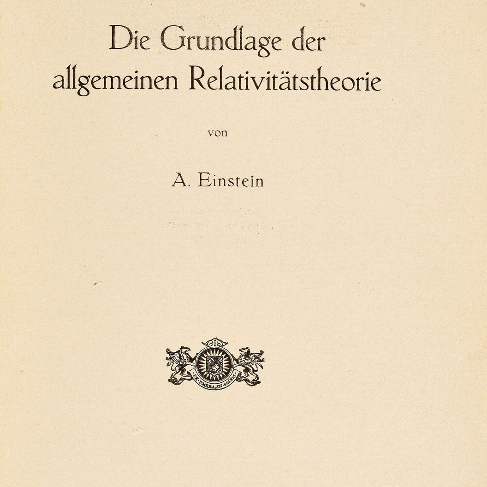
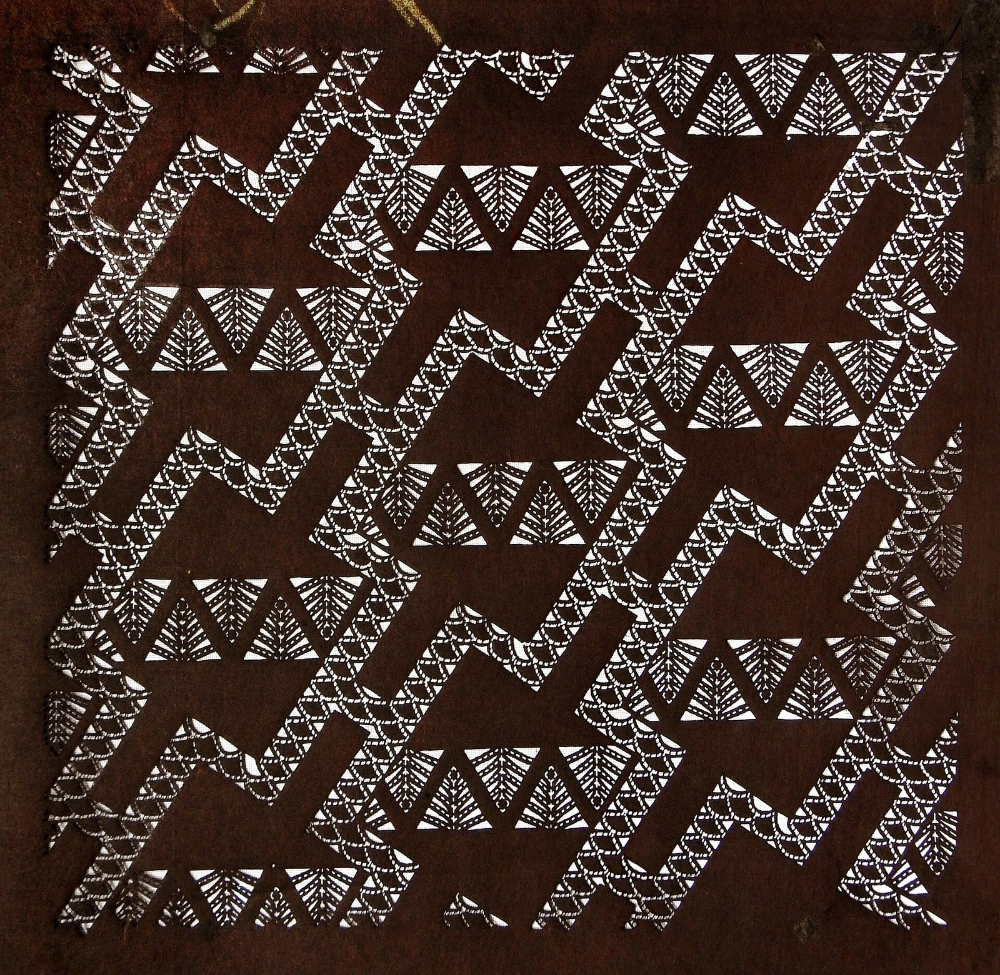
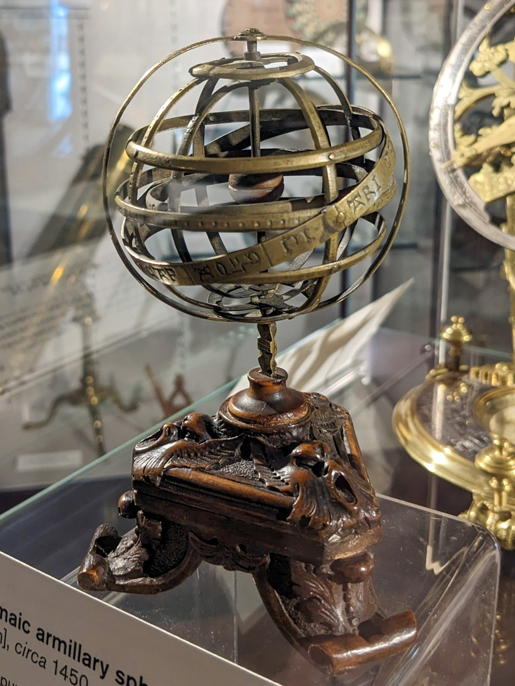
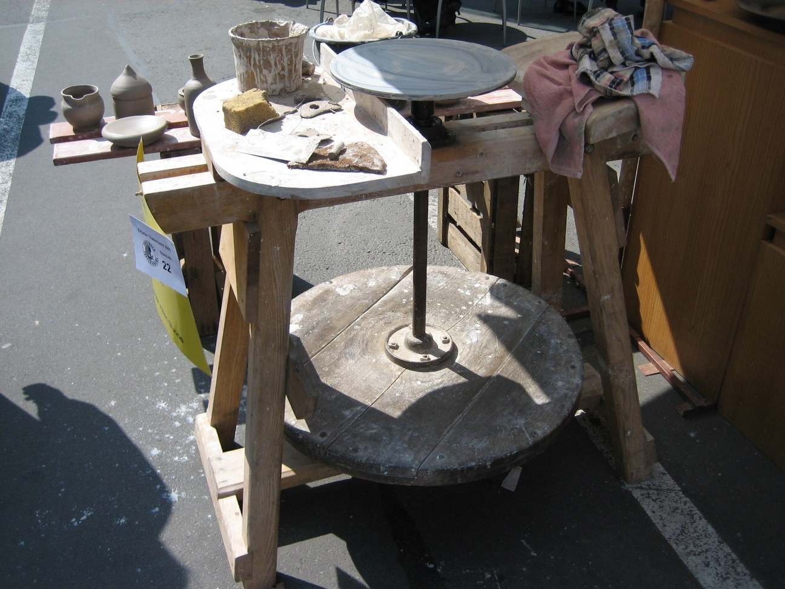

第27回
引き出しの見出しの札の並びで、探すものの場所が決まる。
Marcus Gossler（2005年、グラーツ大学図書館の件名カード目録）／CC BY-SA 3.0／Wikimedia Commons（横長に切り出した）
第24回では、発散や回転の恒等式を、成分を3本ずつ書き並べて確かめた。この回は、その書き方を短くする道具を2つ作る。1つは添字記法：同じ添字が2回出たら足す約束（アインシュタインの規約）と、2つの記号 $\delta_{ij}$、$\varepsilon_{ijk}$ だけで、外積・回転・行列式を1行で書き、ベクトル解析の恒等式を一本の計算で証明する。もう1つは曲線座標：極・円柱・球座標で $\nabla$、発散、回転、ラプラシアンがどう書き換わるかを、第24回と同じ「小さな箱の出入りを数える」やり方で導く。
第1回から続く約束どおり、新しい記号は緑色の枠（記号）で「①読み方 ②日本語での意味 ③省略していない書き方 ④どこで出会うか」を書く。この回の主役は、省略の約束（規約）である。省略は便利だが、苦手の原因は「何を省いたのか分からなくなること」だったので、省略の段階を 1.2 に一度表にし、以後はこの表に戻れるようにしておく。
各節は、「なぜ必要か → 定義 → 数値で一度手を動かす → 導出 → 確かめ → よくある誤解」の順に進む。高校・1年で習った内容も、短く一度は書く。覚えている部分は飛ばしてよい。
前提：総和記号と添字（第4回）、ベクトルと行列の成分（第5回）、発散・回転・ラプラシアン（第24回）。第25回（線積分と面積分）・第26回（ガウスとストークスの定理）は作成中で、この回では使わない。
最初に、この回で新しく説明する記号と、前の回で説明済みの記号を分けて並べる。右の列の「→」で説明のある場所へ飛べる。
| 記号 | 読み方 | ざっくりした意味 | 説明 |
|---|---|---|---|
| 縮約（アインシュタインの規約）：$a_ib_i$ | エー・アイ・ビー・アイ | 同じ添字が1つの項に2回出たら、その添字について足す、という約束 | →1.2 |
| 縮約の書き方の省略の段階（S0〜S3） | ― | $\displaystyle\sum_{i=1}^3a_ib_i$ から $a_ib_i$ までの段階 | →1.2 |
| 自由添字、ダミー添字 | じゆうそえじ、ダミーそえじ | 1回だけ出る添字（式の「行き先」を決める）、2回出る添字（足されて消える） | →1.3 |
| $\partial_i$ | デル・アイ | $i$ 番目の座標での偏微分 $\dfrac{\partial}{\partial x_i}$ | →1.4 |
| $\varepsilon_{ijk}$（レヴィ・チヴィタの記号） | イプシロン・アイ・ジェイ・ケイ | $i,j,k$ が 1,2,3 の巡回なら $+1$、逆の並びなら $-1$、重なりがあれば $0$ | →2.2 |
| 曲線座標 $(q_1,q_2,q_3)$ | キュー・イチ、キュー・ニ、キュー・サン | $x,y,z$ の代わりに使う3つの座標の総称（極・円柱・球座標など） | →4.1 |
| スケール因子 $h_i$ | エイチ・アイ | 座標 $q_i$ を少し動かしたとき、実際の長さが何倍になるか | →4.2 |
| $\hat{\boldsymbol e}_i$（座標方向の単位ベクトル） | イー・ハット・アイ | 座標 $q_i$ が増える向きの、長さ1のベクトル | →4.2 |
| 記号 | 意味 | 初出 |
|---|---|---|
| $:=$、$=$ | 左の名前を右の式で決める／等しい | 第1回 2.2、2.1 |
| 総和 $\displaystyle\sum_{i=1}^n$、ダミー添字、省略の段階（$\sum$ の範囲） | 番号を動かして足す、和の中だけの文字、範囲を省く段階 | 第4回 2.1、3.2、2.5 |
| 二重和、添字をまとめる省略 | 内側の和を先に計算する | 第4回 5.2、5.3 |
| クロネッカーのデルタ $\delta_{ij}$ | 添字が等しければ1、違えば0 | 第4回 9.2 |
| 太字ベクトル $\boldsymbol a$、成分 $a_i$、行列の成分 $A_{ij}$、転置 $\mathsf T$、単位行列 $I$ | 数の組、その中の数、行列の中の数、縦横を入れ替える、対角が1の行列 | 第5回、3.1、4.3、5.2、4.5 |
| 内積 $\boldsymbol a\cdot\boldsymbol b$、外積 $\boldsymbol a\times\boldsymbol b$、ノルム $\|\boldsymbol a\|$、単位ベクトル | 成分を掛けて足した数、両方に直角なベクトル、長さ、長さ1のベクトル | 第5回 7.2、9.2、6.1、6.2 |
| $\dfrac{\partial f}{\partial x}$、$\partial_xf$、高階偏微分と順序交換 | 他の変数を止めて1つだけ動かした微分、$f_{xy}=f_{yx}$（連続なら） | 第11回 2.1、3.1、5.1 |
| 連鎖律 | 合成関数の微分 | 第12回 |
| 極座標 $(r,\theta)$、円柱座標 $(r,\theta,z)$、球座標 $(r,\theta,\varphi)$、ヤコビアン | 距離と角で点を表す座標、面積（体積）の拡大率 | 第13回 7.1、9.1、10.1、8.3 |
| 行列式 $\det$、置換の符号 $\operatorname{sgn}\sigma$ | 面積・体積の拡大率、並べ替えの偶奇 | 第18回、置換の符号 |
| 正規直交基底 | 長さ1で互いに直交するベクトルの組 | 第19回 |
| 位置ベクトル $\boldsymbol r$、$\nabla$、勾配 $\nabla f$ | 点の位置、偏微分を並べる命令、偏微分を並べたベクトル | 第23回 1.1、3.2、3.2 |
| 発散 $\nabla\cdot\boldsymbol v$、回転 $\nabla\times\boldsymbol v$、ラプラシアン $\nabla^2f$ | 湧き出し、渦、勾配の発散 | 第24回 2.1、3.1、4.1 |
PHOTO 1｜現実

1916年に印刷された、アインシュタインの一般相対性理論の論文の、表題頁である。
アルベルト・アインシュタイン『一般相対性理論の基礎』（1916年）／Public domain／Wikimedia Commons（一部を切り出した）
MITATE 1｜見立て

ひとつの形の繰り返しを、切り抜いた型紙一枚で、布に染め出す。
伊勢型紙の幾何文様（作者不詳、19世紀後半）／Public domain／Wikimedia Commons（縮小した）
第24回 3.6 では、「勾配場の回転は $\boldsymbol 0$」を示すために、回転の3つの成分を書き下し、偏微分の順序交換で打ち消し合う様子を3回確かめた。恒等式が1つ増えるたびに、同じ作業が3倍になる。2つのベクトル場がからむ恒等式になると、成分は 3 × 3 = 9 個を超え、書き間違いの場所が増える。
成分を書き並べて長くなる原因は、実は足し算の記号 $\sum$ を、その都度ていねいに書いていることにある。たとえば内積は
$$ \boldsymbol a\cdot\boldsymbol b=\sum_{i=1}^{3}a_ib_i $$
（第5回 7.2、総和は第4回 2.1）と書いた。内積だけでなく、行列とベクトルの積、行列の積、発散、トレース、……のどれも、$\sum$ が付き、動かす添字が 2回ずつ出てくる。そこで、アインシュタイン（A. Einstein、20世紀の物理学者）が一般相対性理論の計算で使い始めた次の約束を採用する。
「同じ添字が1つの項に2回出てきたら、その添字について足す、と読む。$\sum$ は書かない。」
省略は、苦手の原因になりやすい。そこでまず、約束をきちんと文にしてから、何を省いたのかを段階ごとに見る。
①読み方：$a_ib_i$ は「エー・アイ・ビー・アイ」。約束そのものは「アインシュタインの規約」「総和規約」。足すことを「縮約（しゅくやく）」と呼ぶ。
②日本語での意味：1つの項（掛け算のまとまり）の中で、同じ添字の文字が2回出てきたら、その文字を $1$ から $3$ まで動かして足す、という約束。$\sum$ を書かない代わりに、「2回出てきたら足す」と読む。
③省略していない書き方：
$$ a_ib_i\ :=\ \sum_{i=1}^{3}a_ib_i\ =\ a_1b_1+a_2b_2+a_3b_3 $$
ここで $a_i$ はベクトル $\boldsymbol a$ の第 $i$ 成分、動く範囲の「3」は空間の次元（平面なら2）である。$A_{ij}v_j$ なら $\displaystyle\sum_{j=1}^3A_{ij}v_j$ のこと。足した結果は、残った添字の個数に応じて、数（0個）・ベクトル（1個）・行列（2個）になる。
④どこで出会うか：電磁気学・流体力学・連続体力学（応力とひずみ）・量子力学のスピン、機械学習（テンソルの計算 einsum）。
| 段階 | 書き方 | 何を省いたか | 省いても困らない理由（と、困る場面） |
|---|---|---|---|
| S0 | $\displaystyle\sum_{i=1}^{3}a_ib_i$ | （省略なし。動かす添字、下限、上限、一般項がすべてある） | ―（第4回の完成形） |
| S1 | $\displaystyle\sum_{i}a_ib_i$ | 下限と上限（動く範囲） | 空間が3次元と決まっていれば、$i$ の動く範囲は $1,2,3$ の全部。2次元や4次元の話が混ざるときは、省略してはいけない（第4回 2.5 と同じ段階）。 |
| S2 | $a_ib_i$ | $\sum$ の記号そのもの | 「同じ添字が2回出てきた」という見た目だけで、足すことが分かる。困る場面：足したくないのに同じ添字が2回出る式（例：「$i$ 番目の成分どうしの積」をそのまま見たい）。その場合は「（$i$ について和をとらない）」と文で添える。 |
| S3 | $\boldsymbol a\cdot\boldsymbol b$ | 添字そのもの | 添字記法をやめて、ベクトルの記号に戻る。成分を扱う計算（恒等式の証明）には使えない。 |
この回では、S2（$\sum$ なし）で書く。意味が分からなくなったら、S0 に戻って $\sum_{i=1}^3$ を書き足せばよい。以後、式の中の「2回出た添字」を見たら、毎回ここに戻る。
図 1.1 を見る。上から下へ、1段ごとに何かを省く。
約束は、次の3つに分けて言える。
同じ添字が3回以上出る式は、この約束の範囲外である（1.6 で見る）。
図 1.2 を見る。規約の3つの規則で、式を1本ずつ判定する。
①読み方：「じゆうそえじ」「ダミーそえじ」。
②日本語での意味：1つの項の中で1回だけ出る添字を自由添字と呼ぶ。式の外に「結果が何番目か」を伝える添字である。2回出て足される添字をダミー添字（第4回 3.2。仮の添字、動く文字）と呼ぶ。ダミー添字は和の中だけの名前なので、別の文字に書き換えてよい。自由添字は式の外へ出る名前なので、勝手には書き換えられない（両辺でそろえて書き換えるのは可）。
③省略していない書き方：$(A\boldsymbol v)_i=A_{ij}v_j$ を完全形で書くと
$$ (A\boldsymbol v)_i=\sum_{j=1}^{3}A_{ij}\,v_j\qquad(i=1,2,3) $$
自由添字 $i$ は「$i=1,2,3$ のそれぞれについて」という3本の式を1本で書いている印である。ダミー添字 $j$ は和の中に閉じていて、$A_{ij}v_j=A_{ik}v_k$ のように書き換えられる。
④どこで出会うか：式の「型」を確かめる習慣として。（物理の計算では、自由添字の数でスカラー・ベクトル・行列を見分ける。0個ならスカラー、1個ならベクトル、2個なら行列。）
$\boldsymbol a=(1,2,3)^{\mathsf T}$、$\boldsymbol b=(4,5,6)^{\mathsf T}$ とする。
① $a_ib_i$（$i$ が2回 → ダミー。自由添字なし → 結果は数）：S0 に戻して、$a_1b_1+a_2b_2+a_3b_3=1\cdot4+2\cdot5+3\cdot6=4+10+18=32$。
② $a_ib_j$（$i$ も $j$ も1回ずつ → 足さない。自由添字が2個 → 結果は 3×3 の表）：たとえば $i=1,\ j=2$ のとき $a_1b_2=1\cdot5=5$。$i=2,\ j=1$ のとき $a_2b_1=2\cdot4=8$。$i$ と $j$ の組が 9 通りあるので、9個の数ができる。
③ 行列 $A=\begin{pmatrix}1&2\\3&4\end{pmatrix}$（2次元なので $i,j$ は $1,2$）、$\boldsymbol v=(5,6)^{\mathsf T}$：$(A\boldsymbol v)_i=A_{ij}v_j$。自由添字 $i$ が1個 → 結果は2成分のベクトル。$i=1$：$A_{11}v_1+A_{12}v_2=1\cdot5+2\cdot6=17$。$i=2$：$A_{21}v_1+A_{22}v_2=3\cdot5+4\cdot6=39$。したがって $A\boldsymbol v=(17,39)^{\mathsf T}$。これは第16回の行列とベクトルの積の計算そのものである。
④ $A_{ii}$（同じ添字 $i$ が行にも列にも → 足す）：$A_{11}+A_{22}=1+4=5$。対角成分の和（トレース）である。
⑤ 確かめ：①は内積、③は行列とベクトルの積、④はトレースで、どれも第5・16回で $\sum$ を書いて計算した結果と一致する。規約は、新しい計算を作ったのではなく、書き方を短くしただけである。
図 1.3 を見る。$(A\boldsymbol v)_i=A_{ij}v_j$ を、数値の表で読む。
座標 $(x,y,z)$ を $(x_1,x_2,x_3)$ と呼び替える（添字で番号づけする）と、座標が何番目かを添字で言える。偏微分も同じ番号で呼ぶ。
①読み方：「デル・アイ」「パーシャル・アイ」。
②日本語での意味：$i$ 番目の座標だけを動かして、ほかの座標は止めたときの変化率をとる操作。$i=1,2,3$ が $x,y,z$ に対応する。
③省略していない書き方：
$$ \partial_if\ :=\ \frac{\partial f}{\partial x_i}\qquad\Bigl(\partial_1f=\frac{\partial f}{\partial x}=\partial_xf,\ \ \partial_2f=\frac{\partial f}{\partial y},\ \ \partial_3f=\frac{\partial f}{\partial z}\Bigr) $$
右辺は第11回の偏微分、$\partial_xf$ という書き方は第11回 3.1 の省略形である。$\partial_i$ はその番号版で、$\partial_1,\partial_2,\partial_3$ をまとめて1つの文字で呼べる。
④どこで出会うか：ベクトル解析（この回以降）、連続体力学、場の理論、機械学習（勾配の成分 $\partial_i L$）。
これを使うと、第23・24回の記号が1本の式になる。成分の名前は $\boldsymbol v=(v_1,v_2,v_3)^{\mathsf T}$（第24回の $P,Q,R$ にあたる）。
$$ (\nabla f)_i=\partial_if\qquad(\text{勾配の第 }i\text{ 成分}),\qquad \nabla\cdot\boldsymbol v=\partial_iv_i\qquad(\text{発散}),\qquad \nabla^2f=\partial_i\partial_if\qquad(\text{ラプラシアン}) $$
各式を S0 に戻す。発散：$\partial_iv_i=\displaystyle\sum_{i=1}^{3}\frac{\partial v_i}{\partial x_i}=\frac{\partial v_1}{\partial x_1}+\frac{\partial v_2}{\partial x_2}+\frac{\partial v_3}{\partial x_3}$（第24回 2.1 の $P_x+Q_y+R_z$ と同じ）。ラプラシアン：$\partial_i\partial_if=\partial_1\partial_1f+\partial_2\partial_2f+\partial_3\partial_3f=f_{xx}+f_{yy}+f_{zz}$（第24回 4.1）。
数値で手を動かす（座標を座標で微分する）。座標 $x_j$ を座標 $x_i$ で微分する。$x_1,x_2,x_3$ は互いに独立な変数だから、
① $i=j$ のとき：$\partial_ix_i=\dfrac{\partial x_i}{\partial x_i}=1$（例：$\partial_2x_2=\dfrac{\partial y}{\partial y}=1$）。
② $i\ne j$ のとき：$\partial_ix_j=0$（例：$\partial_1x_2=\dfrac{\partial y}{\partial x}=0$。$y$ は $x$ を動かしても変わらない）。
③ ①と②をまとめると $\partial_ix_j=\delta_{ij}$（第4回のクロネッカーのデルタ。添字が等しければ1、違えば0）。
次に、この式を使って $r^2=x_jx_j$（$x^2+y^2+z^2$ の添字版）を $x_i$ で微分する。
④ 積の微分規則（第7回）：$\partial_i(x_jx_j)=(\partial_ix_j)\,x_j+x_j\,(\partial_ix_j)$。
⑤ ③を代入：$=\delta_{ij}x_j+x_j\delta_{ij}$。
⑥ $\delta_{ij}x_j=x_i$ だから、$\partial_i(x_jx_j)=x_i+x_i=2x_i$。
⑦ 確かめ：$\partial_x(x^2+y^2+z^2)=2x$。⑥で $i=1$ とした $2x_1=2x$ と一致する。
第5・16回で習った式を、規約で書き直す。左が完全形（S0）、右が規約（S2）。
| 計算 | S0（$\sum$ を書く） | S2（規約） | 自由添字 |
|---|---|---|---|
| 内積 | $\boldsymbol a\cdot\boldsymbol b=\displaystyle\sum_{i=1}^3a_ib_i$ | $\boldsymbol a\cdot\boldsymbol b=a_ib_i$ | なし（数） |
| 行列×ベクトル | $(A\boldsymbol v)_i=\displaystyle\sum_{j=1}^3A_{ij}v_j$ | $(A\boldsymbol v)_i=A_{ij}v_j$ | $i$（ベクトル） |
| 行列×行列 | $(AB)_{ik}=\displaystyle\sum_{j=1}^3A_{ij}B_{jk}$ | $(AB)_{ik}=A_{ij}B_{jk}$ | $i,k$（行列） |
| トレース | $\operatorname{tr}A=\displaystyle\sum_{i=1}^3A_{ii}$ | $\operatorname{tr}A=A_{ii}$ | なし（数） |
| 転置 | $(A^{\mathsf T})_{ij}=A_{ji}$ | （和なし。添字の入れ替えだけ） | $i,j$ |
| 二次形式 | $\boldsymbol v^{\mathsf T}A\boldsymbol v=\displaystyle\sum_{i=1}^3\sum_{j=1}^3v_iA_{ij}v_j$ | $\boldsymbol v^{\mathsf T}A\boldsymbol v=v_iA_{ij}v_j$ | なし（数） |
二次形式（第21回）の行は、$i$ と $j$ の2つのダミー添字が同時に出る。これは第4回の二重和の省略形である（添字をまとめる省略の、もう一段先）。
確かめ（行列の積）：$A=\begin{pmatrix}1&2\\3&4\end{pmatrix}$、$B=\begin{pmatrix}0&1\\1&0\end{pmatrix}$。$(AB)_{12}=A_{1j}B_{j2}=A_{11}B_{12}+A_{12}B_{22}=1\cdot1+2\cdot0=1$。行列の積の「1行目と2列目の内積」（第5回の省略の段階）と同じである。
誤解1：「同じ添字が3回出ても足せる」。$a_ib_ic_i$ は規約の範囲外である。$\sum_ia_ib_ic_i$ と書きたいのか、$(a_ib_i)c_i$ のように「$a_ib_i$ を足した数に $c_i$ を掛けたもの」のつもりなのかが決まらない。後者なら $c_i$ の $i$ は自由添字になるが、前者ならダミー。3回出る式は、$\sum$ を書いて意味をはっきりさせる。
誤解2：「残る添字は、辺ごとに違ってもよい」。$a_ib_j=c_i$ は誤りである。左辺の自由添字は $i,j$ の2個（3×3 の表）、右辺は $i$ の1個（3成分のベクトル）で、型が違う。等号の両辺は、自由添字の組を同じ文字でそろえる（規則3）。
誤解3：「どの添字も好きな文字に書き換えてよい」。書き換えてよいのはダミー添字だけである。$a_ib_i=a_kb_k$ は正しい（どちらも 32）が、$a_ib_j$ の $j$ を勝手に $i$ に書き換えると、$a_ib_i$（足す）に変わって意味が変わる。自由添字を書き換えるときは、式全体で同時に（両辺とも）書き換える。
誤解4：「$A_{ii}$ と $A_{ij}$ は同じようなもの」。$A_{ii}$ は足されて1個の数（トレース）。$A_{ij}$ は足されず、9個の数の表そのもの。
誤解5：「微分記号の位置は自由」。$\partial_i$ は右にあるものすべてに働く演算子である。$\partial_i(a_jb_j)$ は積全体の微分（積の微分規則が必要）であり、$(\partial_ia_j)b_j$ とは別物。順序も大事で、$a_i\partial_i$（「$\boldsymbol a$ の向きの方向微分」の演算子）と $\partial_ia_i$（$\boldsymbol a$ の発散）は別である。
アインシュタイン自身の規約は、添字を上付き・下付きで使い分け（$a^ib_i$ のように、上と下に1回ずつ出たら足す）、座標変換に対する成分の変わり方の違い（反変・共変）を区別する。この教材は直交座標で添字をすべて下付きにし、「同じ添字が2回出たら足す」と読む流派（機械・電気・物理の入門書の多く）に従う。曲線座標を一般に扱う微分幾何・一般相対性理論の本では、上付き・下付きの区別が必須になる。
次の章では、この書き方に2つの「部品」を加える。
$\delta_{ij}$ は第4回 9.2 で定義した。添字が等しければ1、違えば0である。9個の値を表にすると、対角線が1の 3×3 の表、つまり単位行列 $I$ の成分になる。
図 2.1 を見る。$\delta_{ij}$ の9個の値を表にする。
規約と組み合わせた3つの使い方を、数値で確かめる。$\boldsymbol a=(7,8,9)^{\mathsf T}$ とする。
① 添字を取り替える：$\delta_{ij}a_j$（$j$ が2回 → 足す。自由添字は $i$）。$i=2$ のとき、S0 に戻して $\delta_{21}a_1+\delta_{22}a_2+\delta_{23}a_3=0\cdot7+1\cdot8+0\cdot9=8=a_2$。一般に $\delta_{ij}a_j=a_i$（$j=i$ の1項だけが残る。第4回 9.3）。
② つなぐ：$\delta_{ij}\delta_{jk}=\delta_{ik}$。$i=1,\ k=1$ のとき $\delta_{11}\delta_{11}+\delta_{12}\delta_{21}+\delta_{13}\delta_{31}=1+0+0=1=\delta_{11}$。$i=1,\ k=2$ のとき $\delta_{11}\delta_{12}+\delta_{12}\delta_{22}+\delta_{13}\delta_{32}=0+0+0=0=\delta_{12}$。（行列では $II=I$。）
③ 対角を足す：$\delta_{ii}=\delta_{11}+\delta_{22}+\delta_{33}=3$。次元が $n$ なら $n$。2次元の話なら $2$ である。
この3つは、以後ほとんどの式変形で使う。「$\delta$ のついた添字は、相手の添字に取り替わって $\delta$ が消える」と覚えておく。
外積の成分は、第5回 9.2 で次のように書いた。
$$ \boldsymbol a\times\boldsymbol b=\begin{pmatrix}a_2b_3-a_3b_2\\ a_3b_1-a_1b_3\\ a_1b_2-a_2b_1\end{pmatrix} $$
3つの成分は、見た目は別々でも、同じ形をしている。どれも「$a_jb_k$ の形の2項の差」で、$j,k$ が $i$ から見て「次、その次」の順なら $+$、逆の順なら $-$ である。この符号の規則を表にしたのが次の記号である。
①読み方：「イプシロン・アイ・ジェイ・ケイ」。「レヴィ・チヴィタの記号」「完全反対称記号」。（イタリアの数学者 T. レヴィ・チヴィタの名による。）
②日本語での意味：添字 $i,j,k$ に 1,2,3 を入れたときの値が、$(i,j,k)$ が 1,2,3 の並べ替えなら、その並べ替えの符号（偶なら $+1$、奇なら $-1$）、1,2,3 に重なりがあれば $0$、という3つの添字の記号。1,2,3 を円周に並べて、$1\to2\to3\to1$ の向きに読める並びなら $+1$、逆向きなら $-1$ と覚えてもよい。
③省略していない書き方：
$$ \varepsilon_{ijk}:=\begin{cases}+1 & ((i,j,k)=(1,2,3),\ (2,3,1),\ (3,1,2)\ \text{のとき})\\ -1 & ((i,j,k)=(1,3,2),\ (2,1,3),\ (3,2,1)\ \text{のとき})\\ 0 & (\text{それ以外：}i,j,k\text{ のうち2つ以上が等しいとき})\end{cases} $$
$3\times3\times3=27$ 個の値のうち、$\pm1$ は6個、残りの21個は $0$ である。+1 の3つは、$(1,2,3)$ を左へ1つずつずらしたもの（巡回）。−1 の3つは、そのうち2つの添字を入れ替えたもの。これは第18回の置換の符号 $\operatorname{sgn}\sigma$ と同じ数で、$\varepsilon_{ijk}=\operatorname{sgn}$（$1\mapsto i,\ 2\mapsto j,\ 3\mapsto k$ という並べ替え）である。たとえば $(2,1,3)$ は転倒数が1（2が1より前にある）なので $(-1)^1=-1$、$(2,3,1)$ は転倒数が2（2と3がどちらも1より前にある）なので $(-1)^2=+1$。
④どこで出会うか：外積と回転（この回）、行列式（第18回の公式の添字版）、角運動量（機械力学・量子力学の交換関係 $[L_i,L_j]=i\hbar\varepsilon_{ijk}L_k$）、電磁気学のローレンツ力、連続体力学の回転テンソル。
図 2.2 を見る。27個の値を、$i$ ごとの3枚の表（行 $j$、列 $k$）にして描く。
図 2.3 を見る。1, 2, 3 を円周に並べ、3つの添字がどちらの向きに読めるかで符号を決める。
外積。次の式を主張する。
$$ (\boldsymbol a\times\boldsymbol b)_i=\varepsilon_{ijk}\,a_jb_k\qquad(j,k\text{ は 2回ずつ出るので足す。自由添字は }i) $$
これが第5回の成分の式と一致することを、$i=1,2,3$ の順に確かめる。S0 に戻すと $\varepsilon_{ijk}a_jb_k=\displaystyle\sum_{j=1}^3\sum_{k=1}^3\varepsilon_{ijk}a_jb_k$、つまり 9 個の項の和である。ただし $\varepsilon_{ijk}$ が $0$ でない $(j,k)$ だけが残る。
① $i=1$：$\varepsilon_{1jk}\ne0$ となるのは、$j,k$ が 2,3 の並べ替えのとき、つまり $(j,k)=(2,3)$ と $(3,2)$ だけ。$\varepsilon_{123}=+1$、$\varepsilon_{132}=-1$ だから $(\boldsymbol a\times\boldsymbol b)_1=\varepsilon_{123}a_2b_3+\varepsilon_{132}a_3b_2=a_2b_3-a_3b_2$。
② $i=2$：$(j,k)=(3,1)$ と $(1,3)$。$\varepsilon_{231}=+1$、$\varepsilon_{213}=-1$ だから $a_3b_1-a_1b_3$。
③ $i=3$：$(j,k)=(1,2)$ と $(2,1)$。$\varepsilon_{312}=+1$、$\varepsilon_{321}=-1$ だから $a_1b_2-a_2b_1$。
④ ①〜③は第5回の成分の式と一致する。
数値例：$\boldsymbol a=(2,1,0)^{\mathsf T}$、$\boldsymbol b=(0,3,1)^{\mathsf T}$。$i=2$：$\varepsilon_{231}a_3b_1+\varepsilon_{213}a_1b_3=1\cdot0\cdot0+(-1)\cdot2\cdot1=-2$。同じ計算を $i=1,3$ でも行うと、$i=1$：$a_2b_3-a_3b_2=1\cdot1-0\cdot3=1$、$i=3$：$a_1b_2-a_2b_1=2\cdot3-1\cdot0=6$。したがって $\boldsymbol a\times\boldsymbol b=(1,-2,6)^{\mathsf T}$。
図 2.4 を見る。基本ベクトル $\boldsymbol e_1,\boldsymbol e_2,\boldsymbol e_3$ の外積が、$\varepsilon_{ijk}$ の $+1$ の並びに対応する。
回転。外積の $\boldsymbol a\to\nabla$（成分は $\partial_j$）、$\boldsymbol b\to\boldsymbol v$ とおき換える。第24回 3.2 で、回転は形式的に $\nabla\times\boldsymbol v$ と書けることを見た。その成分は
$$ (\nabla\times\boldsymbol v)_i=\varepsilon_{ijk}\,\partial_jv_k $$
$i=1$：$\varepsilon_{123}\partial_2v_3+\varepsilon_{132}\partial_3v_2=\partial_yR-\partial_zQ$（$\boldsymbol v=(P,Q,R)^{\mathsf T}$）。第24回 3.1 の回転の第1成分と一致する。
行列式。3×3 の行列 $A$ について
$$ \det A=\varepsilon_{ijk}\,A_{1i}\,A_{2j}\,A_{3k} $$
（$i,j,k$ はすべてダミー。自由添字なし → 数）。数値で確かめる。$A=\begin{pmatrix}1&2&0\\0&1&3\\2&0&1\end{pmatrix}$。$\varepsilon\ne0$ の6項だけを書く。
① $(i,j,k)=(1,2,3)$（$+1$）：$A_{11}A_{22}A_{33}=1\cdot1\cdot1=1$。② $(2,3,1)$（$+1$）：$A_{12}A_{23}A_{31}=2\cdot3\cdot2=12$。③ $(3,1,2)$（$+1$）：$A_{13}A_{21}A_{32}=0\cdot0\cdot0=0$。
④ $(1,3,2)$（$-1$）：$-A_{11}A_{23}A_{32}=-1\cdot3\cdot0=0$。⑤ $(3,2,1)$（$-1$）：$-A_{13}A_{22}A_{31}=-0\cdot1\cdot2=0$。⑥ $(2,1,3)$（$-1$）：$-A_{12}A_{21}A_{33}=-2\cdot0\cdot1=0$。
⑦ 合計：$1+12+0+0+0+0=13$。確かめ：第1行で展開すると $1\cdot(1\cdot1-3\cdot0)-2\cdot(0\cdot1-3\cdot2)+0=1+12=13$。一致する。これは第18回のライプニッツの公式（置換の符号×成分の積を全部足す）の添字版である。同じ数 13 は、3つの行ベクトルのスカラー三重積 $\boldsymbol a\cdot(\boldsymbol b\times\boldsymbol c)=\varepsilon_{ijk}a_ib_jc_k$ にもなる（行が $\boldsymbol a=(1,2,0)^{\mathsf T}$、$\boldsymbol b=(0,1,3)^{\mathsf T}$、$\boldsymbol c=(2,0,1)^{\mathsf T}$ のとき）。
定義から直ちに言える3つを、理由つきで並べる。
恒等式の証明で最もよく使うのが次の等式である。添字 $i$ が2回出るので足す。自由添字は $j,k,l,m$ の4つで、$3^4=81$ 通りの等式を1本で書いている。
$$ \varepsilon_{ijk}\,\varepsilon_{ilm}=\delta_{jl}\,\delta_{km}-\delta_{jm}\,\delta_{kl}\qquad(i\text{ について足す}) $$
先に数値で見る。
① $j=l=2,\ k=m=3$：左辺は $\varepsilon_{i23}\varepsilon_{i23}$ の $i$ についての和。$\varepsilon_{i23}\ne0$ は $i=1$ だけ（$\varepsilon_{123}=1$）なので $1\cdot1=1$。右辺 $\delta_{22}\delta_{33}-\delta_{23}\delta_{32}=1-0=1$。一致する。
② $j=m=2,\ k=l=3$：左辺 $\varepsilon_{i23}\varepsilon_{i32}$（$i=1$ だけ）$=\varepsilon_{123}\varepsilon_{132}=1\cdot(-1)=-1$。右辺 $\delta_{23}\delta_{32}-\delta_{22}\delta_{33}=0-1=-1$。一致する。
③ $j=k=2,\ l=m=3$：左辺 $\varepsilon_{i22}\varepsilon_{i33}$ は $\varepsilon_{i22}=0$ ですべて $0$。右辺 $\delta_{23}\delta_{23}-\delta_{23}\delta_{23}=0$。一致する。
証明：$j,k,l,m$ を固定して、左辺を場合分けする。
① $j=k$ のとき：$\varepsilon_{ijk}=0$ なので左辺 $=0$。右辺は $\delta_{jl}\delta_{jm}-\delta_{jm}\delta_{jl}=0$（掛け算の順序を入れ替えただけで、同じ数の引き算）。一致する。$l=m$ のときも、$\varepsilon_{ilm}=0$ で左辺 $0$、右辺 $\delta_{jl}\delta_{kl}-\delta_{jl}\delta_{kl}=0$。一致する。
② $j\ne k$ かつ $l\ne m$ のとき：$\varepsilon_{ijk}\ne0$ となる $i$ は、$j,k$ のどちらとも違うただ1つの値（1,2,3 のうち残りの1つ）。また、$\varepsilon_{ilm}\ne0$ となる $i$ は $l,m$ のどちらとも違う1つの値。したがって、$\{j,k\}$ と $\{l,m\}$ が異なる2要素の集合ならば、2つの条件を同時に満たす $i$ は存在せず、和は $0$ になる。
③ $\{j,k\}=\{l,m\}$ のとき：$i$ は共通の「残りの1つ」に決まる。(a) $(l,m)=(j,k)$ なら、$\varepsilon_{ijk}\varepsilon_{ijk}=(\pm1)^2=+1$。(b) $(l,m)=(k,j)$ なら、$\varepsilon_{ijk}\varepsilon_{ikj}=\varepsilon_{ijk}\cdot(-\varepsilon_{ijk})=-1$（反対称）。
④ 右辺を同じ場合に当てはめる。(a) $(l,m)=(j,k)$，$j\ne k$：$\delta_{jj}\delta_{kk}-\delta_{jk}\delta_{kj}=1-0=1$。(b) $(l,m)=(k,j)$，$j\ne k$：$\delta_{jk}\delta_{kj}-\delta_{jj}\delta_{kk}=0-1=-1$。②の場合（$\{j,k\}\ne\{l,m\}$）：$\delta_{jl}\delta_{km}=1$ には $(l,m)=(j,k)$ が、$\delta_{jm}\delta_{kl}=1$ には $(l,m)=(k,j)$ が必要で、どちらも満たさないので右辺は $0-0=0$。
⑤ すべての場合で左辺と右辺が一致する。∎
図 2.5 を見る。定理2.1 の証明の中身は、「$i$ が決まれば残りの2つの組が決まる」ことだけである。
系（よく使う2つ）。$l=j$ とおいて $j$ について足す（$j$ は2回出る）：
① $\varepsilon_{ijk}\varepsilon_{ijm}=\delta_{jj}\delta_{km}-\delta_{jm}\delta_{kj}$。
② $\delta_{jj}=3$、$\delta_{jm}\delta_{kj}=\delta_{km}$（2.1 ①で $j$ を取り替えた）なので、$=3\delta_{km}-\delta_{km}=2\delta_{km}$。
③ さらに $k=m$ として足す：$\varepsilon_{ijk}\varepsilon_{ijk}=2\delta_{kk}=2\cdot3=6$。確かめ：$\varepsilon$ の $\pm1$ は6個で、2乗するとどれも1。足して6。一致する。
定理2.1 は、2つの $\varepsilon$ が共有する添字 $i$ が同じ位置（どちらも先頭）にあるときの形である。$\varepsilon_{ijk}\varepsilon_{lmk}$ のように共有添字が末尾にあるときは、巡回（2.4）で先頭に移してから使う：$\varepsilon_{ijk}=\varepsilon_{kij}$、$\varepsilon_{lmk}=\varepsilon_{klm}$ なので $\varepsilon_{ijk}\varepsilon_{lmk}=\varepsilon_{kij}\varepsilon_{klm}=\delta_{il}\delta_{jm}-\delta_{im}\delta_{jl}$。位置を見ずに「$i$ が共通ならこの形」と覚えると、符号を間違える。
成分を3本ずつ書くと、ベクトルの恒等式の証明は9個以上の項の追跡になる。添字記法では、次の4手で終わる。
① 左辺の第 $i$ 成分を書く（自由添字 $i$ を1つ立てる）。
② $\times$ を $\varepsilon$、$\cdot$ を同じ添字の2回出現に直す。
③ $\varepsilon\varepsilon$ があれば定理2.1 で $\delta\delta-\delta\delta$ にし、$\delta$ で添字を取り替えて $\delta$ を消す。
④ 残った式を、ベクトルの記号に読み戻す。1行に1操作だけ進める。
力学（回転運動）、電磁気学（ローレンツ力の変形）で出る公式である。成分で証明すると長いが、添字なら次のとおり。
① 左辺の第 $i$ 成分：$\bigl[\boldsymbol a\times(\boldsymbol b\times\boldsymbol c)\bigr]_i=\varepsilon_{ijk}\,a_j\,(\boldsymbol b\times\boldsymbol c)_k$。
② $(\boldsymbol b\times\boldsymbol c)_k=\varepsilon_{klm}\,b_lc_m$ を代入：$=\varepsilon_{ijk}\,\varepsilon_{klm}\,a_jb_lc_m$。
③ $\varepsilon_{ijk}=\varepsilon_{kij}$（巡回、2.4）：$=\varepsilon_{kij}\,\varepsilon_{klm}\,a_jb_lc_m$。
④ 定理2.1（$i\to k$、$j\to i$、$k\to j$ と読み替える）：$\varepsilon_{kij}\varepsilon_{klm}=\delta_{il}\delta_{jm}-\delta_{im}\delta_{jl}$。代入して $=(\delta_{il}\delta_{jm}-\delta_{im}\delta_{jl})\,a_jb_lc_m$。
⑤ 分配する：$=\delta_{il}\delta_{jm}\,a_jb_lc_m-\delta_{im}\delta_{jl}\,a_jb_lc_m$。
⑥ 第1項：$\delta_{il}b_l=b_i$（$l$ を $i$ に取り替える）、$\delta_{jm}a_jc_m=a_jc_j$（$m$ を $j$ に取り替える）。よって第1項 $=b_i\,(a_jc_j)$。
⑦ 第2項：$\delta_{im}c_m=c_i$、$\delta_{jl}a_jb_l=a_jb_j$。よって第2項 $=c_i\,(a_jb_j)$。
⑧ ベクトルに読み戻す：$a_jc_j=\boldsymbol a\cdot\boldsymbol c$、$a_jb_j=\boldsymbol a\cdot\boldsymbol b$ なので $\bigl[\ldots\bigr]_i=b_i(\boldsymbol a\cdot\boldsymbol c)-c_i(\boldsymbol a\cdot\boldsymbol b)$。$i$ は任意だから、ベクトルの等式として証明された。∎
数値で確かめ。$\boldsymbol a=(2,1,0)^{\mathsf T}$、$\boldsymbol b=(3,1,0)^{\mathsf T}$、$\boldsymbol c=(1,2,0)^{\mathsf T}$（どれも $xy$ 平面内）。$\boldsymbol b\times\boldsymbol c=(0,0,3\cdot2-1\cdot1)^{\mathsf T}=(0,0,5)^{\mathsf T}$。$\boldsymbol a\times(0,0,5)^{\mathsf T}=(1\cdot5-0,\ 0-2\cdot5,\ 0)^{\mathsf T}=(5,-10,0)^{\mathsf T}$。右辺：$\boldsymbol a\cdot\boldsymbol c=2+2=4$、$\boldsymbol a\cdot\boldsymbol b=6+1=7$ なので $4\boldsymbol b-7\boldsymbol c=(12-7,\ 4-14,\ 0)^{\mathsf T}=(5,-10,0)^{\mathsf T}$。一致する。
図 3.1 を見る。3本のベクトルを $xy$ 平面に置き、$\boldsymbol b\times\boldsymbol c$ が $z$ 方向を向くことを使って、結果 $\boldsymbol w$ を描く。
外積は結合法則を満たさない。$\boldsymbol a\times(\boldsymbol b\times\boldsymbol c)\ne(\boldsymbol a\times\boldsymbol b)\times\boldsymbol c$。反例：$\boldsymbol a=(1,0,0)^{\mathsf T}$、$\boldsymbol b=(1,1,0)^{\mathsf T}$、$\boldsymbol c=(0,0,1)^{\mathsf T}$。左辺は、$\boldsymbol b\times\boldsymbol c=(1,-1,0)^{\mathsf T}$ なので $\boldsymbol a\times(1,-1,0)^{\mathsf T}=(0,0,-1)^{\mathsf T}$。右辺は、$\boldsymbol a\times\boldsymbol b=(0,0,1)^{\mathsf T}$ なので $(0,0,1)^{\mathsf T}\times\boldsymbol c=\boldsymbol 0$。違う値になる。括弧は省けない。
第24回 3.6 で、成分を書き並べて示した2つの等式を、添字で示す。キーワードは反対称の記号と対称な量を掛けて足すと $0$である。
① $\nabla\times(\nabla\phi)$ の第 $i$ 成分：$\varepsilon_{ijk}\,\partial_j(\nabla\phi)_k=\varepsilon_{ijk}\,\partial_j\partial_k\phi$。
② この和を $S_i:=\varepsilon_{ijk}\,\partial_j\partial_k\phi$ とおく。ダミー添字 $j,k$ の名前を入れ替えて書く（ダミーなので書き換えてよい。1.2）：$S_i=\varepsilon_{ikj}\,\partial_k\partial_j\phi$。
③ $\varepsilon_{ikj}=-\varepsilon_{ijk}$（反対称、2.4）、$\partial_k\partial_j\phi=\partial_j\partial_k\phi$（偏微分の順序交換。第11回 5.1。$\phi$ の2階偏微分が連続という仮定）：$S_i=-\varepsilon_{ijk}\,\partial_j\partial_k\phi=-S_i$。
④ $S_i=-S_i$ ならば $2S_i=0$、よって $S_i=0$。$i$ は任意だから $\nabla\times(\nabla\phi)=\boldsymbol 0$。∎
同じ型で、$\nabla\cdot(\nabla\times\boldsymbol v)=\partial_i\bigl(\varepsilon_{ijk}\partial_jv_k\bigr)=\varepsilon_{ijk}\,\partial_i\partial_jv_k$。ここでも $\varepsilon_{ijk}$ は $i,j$ の入れ替えで符号が変わり（反対称）、$\partial_i\partial_j$ は入れ替えても変わらない（対称）。ダミー添字 $i\leftrightarrow j$ を入れ替えて同じ議論をすると、和 $=-$ 和 となり $0$。
図 3.2 を見る。$S_i=\varepsilon_{ijk}\,\partial_j\partial_k\phi$ の和を、$i=1$ について表で読む。
数値で確かめ。$\phi=xyz$。$\partial_1\partial_2\phi=\partial_x\partial_y(xyz)=z$、$\partial_2\partial_1\phi=\partial_y\partial_x(xyz)=z$ で等しい（対称）。第1成分：$S_1=\varepsilon_{123}\partial_2\partial_3\phi+\varepsilon_{132}\partial_3\partial_2\phi=x-x=0$（$\partial_y\partial_z(xyz)=x$）。打ち消し合っている。
電磁波の波動方程式を導くときに使う。左辺は回転を2回かけたもの。
① 第 $i$ 成分：$\varepsilon_{ijk}\,\partial_j(\nabla\times\boldsymbol v)_k$。
② $(\nabla\times\boldsymbol v)_k=\varepsilon_{klm}\,\partial_lv_m$ を代入：$=\varepsilon_{ijk}\,\varepsilon_{klm}\,\partial_j\partial_lv_m$。
③ 共有添字 $k$ を先頭へ（巡回）：$\varepsilon_{ijk}=\varepsilon_{kij}$。定理2.1：$\varepsilon_{kij}\varepsilon_{klm}=\delta_{il}\delta_{jm}-\delta_{im}\delta_{jl}$。よって $=(\delta_{il}\delta_{jm}-\delta_{im}\delta_{jl})\,\partial_j\partial_lv_m$。
④ 第1項：$\delta_{il}$ で $l\to i$、$\delta_{jm}$ で $m\to j$：$\partial_j\partial_iv_j$。第2項：$\delta_{im}$ で $m\to i$、$\delta_{jl}$ で $l\to j$：$\partial_j\partial_jv_i$。よって $=\partial_j\partial_iv_j-\partial_j\partial_jv_i$。
⑤ 第1項は順序交換で $\partial_i(\partial_jv_j)=\bigl[\nabla(\nabla\cdot\boldsymbol v)\bigr]_i$。第2項 $\partial_j\partial_jv_i=\nabla^2v_i$（各成分にラプラシアン）。
⑥ 読み戻す：$\nabla\times(\nabla\times\boldsymbol v)=\nabla(\nabla\cdot\boldsymbol v)-\nabla^2\boldsymbol v$。∎（$\nabla^2\boldsymbol v$ は各成分のラプラシアンを並べたベクトル。直交座標でのみ、この意味で使える。4.9 で曲線座標との違いを述べる。）
数値で確かめ。$\boldsymbol v=(y^2,0,0)^{\mathsf T}$。$\nabla\times\boldsymbol v=(0,0,-2y)^{\mathsf T}$（第3成分 $\partial_xv_2-\partial_yv_1=0-2y$）。もう一度回転：$(\partial_y(-2y),\ -\partial_x(-2y),\ 0)^{\mathsf T}=(-2,0,0)^{\mathsf T}$。右辺：$\nabla\cdot\boldsymbol v=\partial_x(y^2)=0$ なので第1項は $\boldsymbol 0$。$\nabla^2\boldsymbol v=(\partial_y^2(y^2),0,0)^{\mathsf T}=(2,0,0)^{\mathsf T}$。$\boldsymbol 0-(2,0,0)^{\mathsf T}=(-2,0,0)^{\mathsf T}$。一致する。
$\nabla\times(\phi\boldsymbol v)=\phi\,\nabla\times\boldsymbol v+\nabla\phi\times\boldsymbol v$ を示す。
① 第 $i$ 成分：$\varepsilon_{ijk}\,\partial_j(\phi v_k)$。
② 積の微分規則（$\partial_j$ は1変数の微分と同じく積に働く。第7回）：$=\varepsilon_{ijk}\,(\partial_j\phi)\,v_k+\varepsilon_{ijk}\,\phi\,\partial_jv_k$。
③ 第1項は $(\nabla\phi\times\boldsymbol v)_i$（外積 $\boldsymbol a\times\boldsymbol b$ の $a_j\to\partial_j\phi$）、第2項は $\phi\,(\nabla\times\boldsymbol v)_i$。∎
もう1つ：$\nabla\cdot(\boldsymbol v\times\boldsymbol w)=\boldsymbol w\cdot(\nabla\times\boldsymbol v)-\boldsymbol v\cdot(\nabla\times\boldsymbol w)$。
① $\partial_i\bigl(\varepsilon_{ijk}v_jw_k\bigr)=\varepsilon_{ijk}(\partial_iv_j)w_k+\varepsilon_{ijk}v_j(\partial_iw_k)$。
② 第1項：$\varepsilon_{ijk}=\varepsilon_{kij}$ （巡回）で $\varepsilon_{kij}\partial_iv_j=(\nabla\times\boldsymbol v)_k$。よって $(\nabla\times\boldsymbol v)_kw_k=\boldsymbol w\cdot(\nabla\times\boldsymbol v)$。
③ 第2項：$\varepsilon_{ijk}=-\varepsilon_{jik}$ （反対称）で $\varepsilon_{ijk}\partial_iw_k=-\varepsilon_{jik}\partial_iw_k=-(\nabla\times\boldsymbol w)_j$。よって $-v_j(\nabla\times\boldsymbol w)_j=-\boldsymbol v\cdot(\nabla\times\boldsymbol w)$。∎
数値で確かめ。$\phi=xy$、$\boldsymbol v=(x,y,z)^{\mathsf T}$（$\nabla\times\boldsymbol v=\boldsymbol 0$）。$\phi\boldsymbol v=(x^2y,\ xy^2,\ xyz)^{\mathsf T}$、その回転の第3成分は $\partial_x(xy^2)-\partial_y(x^2y)=y^2-x^2$。右辺の第3成分：$\phi\cdot0+(\nabla\phi\times\boldsymbol v)_3=(y,x,0)^{\mathsf T}\times(x,y,z)^{\mathsf T}$ の第3成分 $=y\cdot y-x\cdot x=y^2-x^2$。一致する。
PHOTO 2｜現実

輪を重ねて、天のどこにあるかを指す、1450年ごろの天球儀である。
The wub（2023年、ケンブリッジ・ホイップル科学史博物館のアーミラリ天球儀）／CC BY-SA 4.0／Wikimedia Commons（縮小した）
MITATE 2｜見立て

中心の軸のまわりを、円盤が回る道具である。
Oliver Kurmis（2005年、エアフルトの陶器市のろくろ）／Public domain／Wikimedia Commons（縮小した）
ここまでは、座標 $(x,y,z)$ の3本の軸が、場所によらず同じ向きを向いている直交座標の話だった。しかし、工学の問題は、円筒の管、球形のタンク、回転する軸のように、円や球が境界であることが多い。たとえば半径 $R$ の円板の縁は、$(x,y)$ で書けば $x^2+y^2=R^2$ という曲線の式だが、極座標で書けば $r=R$ という「1つの座標を固定するだけ」の式になる。境界条件を扱いやすくするために、境界に合った座標へ替えたい。
替えるときに困るのは、$\nabla$、発散、回転、ラプラシアンの形が変わることである。これらは偏微分の組み合わせだから、$x,y$ の偏微分を $r,\theta$ の偏微分に直す必要がある（第12回の連鎖律）。連鎖律で直接計算する方法もある（第12回 3.7）が、この回では第24回と同じ「小さな箱を置いて、出入りを数える」やり方で、3つの座標系にまとめて通用する公式を導く。
もう1つの困りごとがある。極座標で「外向き」「ぐるっと回る向き」を考えたいとき、その向きのベクトルは場所によって向きが違う。直交座標の $\boldsymbol e_x=(1,0)^{\mathsf T}$ はどの点でも同じだが、「外向き」の単位ベクトルは、点 $(1,0)$ では $(1,0)^{\mathsf T}$、点 $(0,1)$ では $(0,1)^{\mathsf T}$ である。この「基底が動く」ことが、曲線座標のすべての注意点の原因になる。
①読み方：「キュー・イチ、キュー・ニ、キュー・サン」。「曲線座標」。
②日本語での意味：直交座標 $(x,y,z)$ の代わりに、空間の点を指定する3つの数。極・円柱・球座標などの総称。点の位置ベクトルが $(q_1,q_2,q_3)$ の関数 $\boldsymbol r(q_1,q_2,q_3)$ として決まっている。ほかの2つを止めて $q_i$ だけを動かしたとき、点が描く曲線を、$q_i$ の座標曲線と呼ぶ（直交座標なら $x$ 軸に平行な直線）。
③省略していない書き方：
$$ \boldsymbol r(q_1,q_2,q_3)=\begin{pmatrix}x(q_1,q_2,q_3)\\ y(q_1,q_2,q_3)\\ z(q_1,q_2,q_3)\end{pmatrix} $$
例：球座標 $(q_1,q_2,q_3)=(r,\theta,\varphi)$ なら、$x=r\sin\theta\cos\varphi$、$y=r\sin\theta\sin\varphi$、$z=r\cos\theta$（第13回 10.1）。円柱座標は $(q_1,q_2,q_3)=(r,\theta,z)$（第13回 9.1）、極座標は $(q_1,q_2)=(r,\theta)$。この教材は第13回の文字づかいに従う：円柱座標の方位角は $\theta$、球座標の方位角は $\varphi$ で、$\theta$ は $z$ 軸からの角。
④どこで出会うか：偏微分方程式を境界に合わせて解くとき（第40回以降）、流体力学（管の流れ）、電磁気学（球・円筒導体）、機械力学（回転体）。
①読み方：「エイチ・アイ」。「スケール因子」「ラメ係数」「計量係数」。
②日本語での意味：座標 $q_i$ を $1$ 動かしたときの、実際の（直交座標での）移動の長さ。$q_i$ を少し動かすと、点は座標曲線に沿って動く。その「座標の1あたりの長さ」が $h_i$ である。単位に注意：$q_i$ が長さでない（角度など）とき、$h_i$ は「長さ÷座標の単位」になる。
③省略していない書き方：
$$ h_i:=\Bigl\|\frac{\partial\boldsymbol r}{\partial q_i}\Bigr\|=\sqrt{\Bigl(\frac{\partial x}{\partial q_i}\Bigr)^2+\Bigl(\frac{\partial y}{\partial q_i}\Bigr)^2+\Bigl(\frac{\partial z}{\partial q_i}\Bigr)^2}\qquad(i=1,2,3) $$
ここで $\dfrac{\partial\boldsymbol r}{\partial q_i}$ は、位置ベクトルの各成分を $q_i$ で偏微分して並べたベクトル（第11回）、$\|\cdot\|$ はノルム。
④どこで出会うか：曲線座標の公式のすべて（4.4〜4.7）、線素・面積要素・体積要素（第13回の $r$、$r^2\sin\theta$ は $h_i$ の積）。
①読み方：「イー・ハット・アイ」。「ハット」は、長さ1のベクトルにつける帽子。
②日本語での意味：座標 $q_i$ が増える向きの、長さ1のベクトル。その点での座標曲線の接線方向。点が変わると向きが変わる。
③省略していない書き方：
$$ \hat{\boldsymbol e}_i:=\frac{1}{h_i}\,\frac{\partial\boldsymbol r}{\partial q_i}\qquad\Bigl(\text{長さは }\Bigl\|\frac1{h_i}\frac{\partial\boldsymbol r}{\partial q_i}\Bigr\|=\frac{h_i}{h_i}=1\Bigr) $$
この教材で扱う曲線座標は、3本の $\hat{\boldsymbol e}_1,\hat{\boldsymbol e}_2,\hat{\boldsymbol e}_3$ が各点で互いに直交し、この順で右手系（$\hat{\boldsymbol e}_1\times\hat{\boldsymbol e}_2=\hat{\boldsymbol e}_3$）になっているもの（直交曲線座標）に限る。つまり、各点で正規直交基底になる。
④どこで出会うか：ベクトル場を「外向き成分」「回る成分」に分けるとき（流体の速度、電場、磁場）、機械力学の遠心力・コリオリ力。
最小の具体例（極座標）。$\boldsymbol r(r,\theta)=(r\cos\theta,\ r\sin\theta)^{\mathsf T}$。
① $r$ で偏微分：$\dfrac{\partial\boldsymbol r}{\partial r}=(\cos\theta,\ \sin\theta)^{\mathsf T}$。長さ：$h_r=\sqrt{\cos^2\theta+\sin^2\theta}=1$。単位ベクトル：$\hat{\boldsymbol e}_r=(\cos\theta,\ \sin\theta)^{\mathsf T}$（原点から外向き）。
② $\theta$ で偏微分：$\dfrac{\partial\boldsymbol r}{\partial\theta}=(-r\sin\theta,\ r\cos\theta)^{\mathsf T}$。長さ：$h_\theta=\sqrt{r^2\sin^2\theta+r^2\cos^2\theta}=r$。単位ベクトル：$\hat{\boldsymbol e}_\theta=(-\sin\theta,\ \cos\theta)^{\mathsf T}$（反時計回りに回る向き）。
③ 直交の確認：$\hat{\boldsymbol e}_r\cdot\hat{\boldsymbol e}_\theta=-\cos\theta\sin\theta+\sin\theta\cos\theta=0$。
④ 数値：$(r,\theta)=(2,\ \pi/6)$ の点で、$\hat{\boldsymbol e}_r=(\tfrac{\sqrt3}2,\ \tfrac12)^{\mathsf T}$、$\hat{\boldsymbol e}_\theta=(-\tfrac12,\ \tfrac{\sqrt3}2)^{\mathsf T}$。$\theta$ だけを $d\theta=0.1$ 動かすと、点は $\hat{\boldsymbol e}_\theta$ の向きにおよそ $h_\theta\,d\theta=2\times0.1=0.2$ 動く。確かめ：実際の移動の長さ（弦）は $2\cdot2\sin(0.05)=0.19995\ldots\approx0.2$。一致する。
⑤ 位置の違い：$(r,\theta)=(2,\ \pi/2)$ の点（真上）では $\hat{\boldsymbol e}_r=(0,1)^{\mathsf T}$、$\hat{\boldsymbol e}_\theta=(-1,0)^{\mathsf T}$。④の点とは向きが違う。
図 4.1 を見る。極座標では、座標曲線が円（$r$ 一定）と半直線（$\theta$ 一定）になる。
図 4.2 を見る。円 $r=2$ の上の4点で、$\hat{\boldsymbol e}_r$ と $\hat{\boldsymbol e}_\theta$ を描く。
座標を $dq_i$ だけ動かしたときの移動は、1次近似（第8回）で $\dfrac{\partial\boldsymbol r}{\partial q_i}dq_i=h_i\,dq_i\,\hat{\boldsymbol e}_i$ になる。3つの座標を同時に $dq_1,dq_2,dq_3$ 動かして得られる小さな箱は、辺の長さが $h_1dq_1,\ h_2dq_2,\ h_3dq_3$ で、辺どうしが直交する。したがって
$$ \text{(辺の長さ)}=h_i\,dq_i,\qquad \text{(体積)}=h_1h_2h_3\,dq_1\,dq_2\,dq_3 $$
確かめ：ヤコビアンは、$\partial\boldsymbol r/\partial q_i$ を3列に並べた行列の行列式。3列が直交していて長さが $h_i$ なので、箱の体積と同じ $h_1h_2h_3$ になる。
3つの座標系のスケール因子を求める。極座標の結果は 4.2 で出した。円柱座標は $\boldsymbol r=(r\cos\theta,\ r\sin\theta,\ z)^{\mathsf T}$ なので、$\partial_r\boldsymbol r=(\cos\theta,\sin\theta,0)^{\mathsf T}$、$\partial_\theta\boldsymbol r=(-r\sin\theta,\ r\cos\theta,\ 0)^{\mathsf T}$、$\partial_z\boldsymbol r=(0,0,1)^{\mathsf T}$。球座標は $\boldsymbol r=(r\sin\theta\cos\varphi,\ r\sin\theta\sin\varphi,\ r\cos\theta)^{\mathsf T}$ なので
① $\partial_r\boldsymbol r=(\sin\theta\cos\varphi,\ \sin\theta\sin\varphi,\ \cos\theta)^{\mathsf T}$。長さ $\sqrt{\sin^2\theta(\cos^2\varphi+\sin^2\varphi)+\cos^2\theta}=1$。$h_r=1$。
② $\partial_\theta\boldsymbol r=(r\cos\theta\cos\varphi,\ r\cos\theta\sin\varphi,\ -r\sin\theta)^{\mathsf T}$。長さ $\sqrt{r^2\cos^2\theta+r^2\sin^2\theta}=r$。$h_\theta=r$。
③ $\partial_\varphi\boldsymbol r=(-r\sin\theta\sin\varphi,\ r\sin\theta\cos\varphi,\ 0)^{\mathsf T}$。長さ $\sqrt{r^2\sin^2\theta}=r\sin\theta$（$0\le\theta\le\pi$ で $\sin\theta\ge0$）。$h_\varphi=r\sin\theta$。
④ 3本の内積を取ると、どの2本も $0$（円柱座標、球座標とも。4.2 ③と同じ計算）。直交曲線座標になっている。
| 座標系 | $(q_1,q_2,q_3)$ | $(h_1,h_2,h_3)$ | 体積（面積）要素 $h_1h_2h_3$ | $\hat{\boldsymbol e}_1,\hat{\boldsymbol e}_2,\hat{\boldsymbol e}_3$ |
|---|---|---|---|---|
| 直交座標 | $(x,y,z)$ | $(1,\ 1,\ 1)$ | $1$ | $\hat{\boldsymbol e}_x,\hat{\boldsymbol e}_y,\hat{\boldsymbol e}_z$（どこでも同じ） |
| 極座標（平面） | $(r,\theta)$ | $(1,\ r)$ | $r$ | 外向き、反時計回り |
| 円柱座標 | $(r,\theta,z)$ | $(1,\ r,\ 1)$ | $r$ | $z$ 軸から遠ざかる向き、方位角が増える向き、$+z$ |
| 球座標 | $(r,\theta,\varphi)$ | $(1,\ r,\ r\sin\theta)$ | $r^2\sin\theta$ | 原点から遠ざかる向き、$\theta$ が増える向き（南向き）、$\varphi$ が増える向き（東向き） |
体積要素は、第13回の $dV=r\,dr\,d\theta\,dz$（円柱）、$dV=r^2\sin\theta\,dr\,d\theta\,d\varphi$（球、第13回 10.3）と同じ形である。
数値で意味を見る。球座標で $r=2$ の球面上、$\varphi$ を $d\varphi=0.1$ 動かす。赤道（$\theta=\pi/2$）では $h_\varphi=2\sin(\pi/2)=2$ なので $0.2$ 進む。緯度が高く $\theta=\pi/6$（北極から $30^\circ$）では $h_\varphi=2\sin(\pi/6)=1$ なので $0.1$ しか進まない。同じ経度の変化でも、北極に近いほど実際の距離は短い。
図 4.3 を見る。極座標の小さな箱の辺の長さを、実際の長さで書き込む。
図 4.4 を見る。球座標の小さな箱は、3つの辺の長さがすべて違う。
球座標の文字は本によって逆になる。数学の本には、$\theta$ を方位角、$\varphi$ を $z$ 軸からの角とするものがある。この教材は物理・工学の本の多くに合わせた 第13回 10.2 の流儀（$\theta$ が $z$ 軸からの角、$\varphi$ が方位角）に従う。また、円柱座標の距離を $\rho$、方位角を $\varphi$ と書く本もある。公式を他の本から引用するときは、文字の役割を先に照合する。
勾配 $\nabla f$ を、基底 $\hat{\boldsymbol e}_i$ の成分で書く。
$$ \nabla f=\sum_{i=1}^{3}\frac{1}{h_i}\frac{\partial f}{\partial q_i}\,\hat{\boldsymbol e}_i $$
ここだけは、足し算の記号 $\sum$ を書いた。$\hat{\boldsymbol e}_i$ が場所で変わるので、同じ添字 $i$ が「成分」と「基底」の両方に出る。規約（1.2）の「同じ添字を2回」の形に見えるが、今は成分（数）と基底ベクトルの組を足している。慣れるまでは $\sum$ を残しておく。
証明：① 座標を $q_i$ だけ $dq_i$ 動かす。位置は $d\boldsymbol r=h_i\,dq_i\,\hat{\boldsymbol e}_i$ だけ変わる（4.3）。
② 関数 $f$ の変化を2通りに表す。(a) $q_i$ で偏微分した定義そのものから $df=\dfrac{\partial f}{\partial q_i}dq_i$。(b) 勾配の定義（第23回：$df=\nabla f\cdot d\boldsymbol r$）から $df=\nabla f\cdot(h_i\,dq_i\,\hat{\boldsymbol e}_i)=h_i\,(\nabla f\cdot\hat{\boldsymbol e}_i)\,dq_i$。
③ (a)=(b) を $dq_i$ で割る：$\nabla f\cdot\hat{\boldsymbol e}_i=\dfrac1{h_i}\dfrac{\partial f}{\partial q_i}$。
④ $\hat{\boldsymbol e}_1,\hat{\boldsymbol e}_2,\hat{\boldsymbol e}_3$ は正規直交基底なので、任意のベクトル $\boldsymbol w$ は $\boldsymbol w=\sum_i(\boldsymbol w\cdot\hat{\boldsymbol e}_i)\hat{\boldsymbol e}_i$（第19回）。$\boldsymbol w=\nabla f$ に③を使えば定理が得られる。∎
極・円柱・球座標では
$$ \nabla f=\partial_rf\ \hat{\boldsymbol e}_r+\frac1r\partial_\theta f\ \hat{\boldsymbol e}_\theta\ (+\partial_zf\ \hat{\boldsymbol e}_z)\ ,\qquad \nabla f=\partial_rf\ \hat{\boldsymbol e}_r+\frac1r\partial_\theta f\ \hat{\boldsymbol e}_\theta+\frac1{r\sin\theta}\partial_\varphi f\ \hat{\boldsymbol e}_\varphi\ (\text{球}) $$
数値で確かめ。① $f=x^2+y^2=r^2$：$\nabla f=2r\,\hat{\boldsymbol e}_r+\frac1r\cdot0\cdot\hat{\boldsymbol e}_\theta=2r\,\hat{\boldsymbol e}_r$。直交座標で $\nabla f=(2x,2y)^{\mathsf T}=2r(\cos\theta,\sin\theta)^{\mathsf T}=2r\,\hat{\boldsymbol e}_r$。一致する。
② $f=y=r\sin\theta$：$\partial_rf=\sin\theta$、$\frac1r\partial_\theta f=\frac1r\,r\cos\theta=\cos\theta$。$\nabla f=\sin\theta\,\hat{\boldsymbol e}_r+\cos\theta\,\hat{\boldsymbol e}_\theta=\sin\theta(\cos\theta,\sin\theta)^{\mathsf T}+\cos\theta(-\sin\theta,\cos\theta)^{\mathsf T}=(0,\ \sin^2\theta+\cos^2\theta)^{\mathsf T}=(0,1)^{\mathsf T}$。直交座標の $\nabla y=(0,1)^{\mathsf T}$ と一致する。
③ $f=\theta$（方位角そのもの）：$\nabla\theta=\frac1r\hat{\boldsymbol e}_\theta$。直交座標で $\theta=\arctan(y/x)$ を偏微分した $(-y,x)^{\mathsf T}/r^2=\frac1r(-\sin\theta,\cos\theta)^{\mathsf T}$ と一致する。
第24回 1.2 の「小さな正方形から出ていく量」を、4.3 の小さな箱で数え直す。
$$ \nabla\cdot\boldsymbol v=\frac{1}{h_1h_2h_3}\sum_{i=1}^{3}\frac{\partial}{\partial q_i}\Bigl(\frac{h_1h_2h_3}{h_i}\,v_i\Bigr),\qquad \boldsymbol v=\sum_iv_i\hat{\boldsymbol e}_i $$
証明：点 $(q_1,q_2,q_3)$ を角とする小さな箱（辺 $h_idq_i$）から出ていく量を、6つの面で数える。
① $q_1$ 方向の2つの面。面は $\hat{\boldsymbol e}_1$ に垂直で、面積は $h_2dq_2\times h_3dq_3=h_2h_3\,dq_2dq_3$。この面積は、面の置かれた場所の $h_2h_3$ の値で決まる。遠い面（$q_1+dq_1$ の位置）は外向きが $+\hat{\boldsymbol e}_1$ で、出ていく量は $v_1h_2h_3\big|_{q_1+dq_1}\,dq_2dq_3$。近い面（$q_1$ の位置）は外向きが $-\hat{\boldsymbol e}_1$ で、$-v_1h_2h_3\big|_{q_1}\,dq_2dq_3$。
② 2つを足す：$\bigl[v_1h_2h_3\big|_{q_1+dq_1}-v_1h_2h_3\big|_{q_1}\bigr]dq_2dq_3\approx\dfrac{\partial(h_2h_3v_1)}{\partial q_1}\,dq_1dq_2dq_3$。
③ $q_2,q_3$ 方向の面も、番号を入れ替えて、$\dfrac{\partial(h_3h_1v_2)}{\partial q_2}\,dq_1dq_2dq_3$、$\dfrac{\partial(h_1h_2v_3)}{\partial q_3}\,dq_1dq_2dq_3$。
④ 6面の合計を体積 $h_1h_2h_3\,dq_1dq_2dq_3$ で割り、箱を縮める。第24回 2.1 で、「単位体積あたりに出ていく量」が発散だった。 ∎
極・円柱・球座標では
$$ \text{極：}\ \frac1r\partial_r(rv_r)+\frac1r\partial_\theta v_\theta,\qquad \text{円柱：}\ \frac1r\partial_r(rv_r)+\frac1r\partial_\theta v_\theta+\partial_zv_z, $$ $$ \text{球：}\ \frac1{r^2}\partial_r(r^2v_r)+\frac1{r\sin\theta}\partial_\theta(\sin\theta\,v_\theta)+\frac1{r\sin\theta}\partial_\varphi v_\varphi $$
導出（球の第2項）：$h_1h_2h_3=r^2\sin\theta$、$i=2$（$\theta$）のとき $\dfrac{h_1h_2h_3}{h_\theta}=\dfrac{r^2\sin\theta}{r}=r\sin\theta$。定理は $\dfrac1{r^2\sin\theta}\partial_\theta(r\sin\theta\,v_\theta)=\dfrac1{r\sin\theta}\partial_\theta(\sin\theta\,v_\theta)$（$r$ は $\theta$ に依存しないので外に出る）。
図 4.5 を見る。$v_r$ が一定でも、内側の面より外側の面のほうが長い。
数値で確かめ（極座標）。
① $\boldsymbol v=r\,\hat{\boldsymbol e}_r=(x,y)^{\mathsf T}$：$\dfrac1r\partial_r(r\cdot r)=\dfrac1r\cdot2r=2$。直交座標で $\partial_xx+\partial_yy=2$。一致する。
② $\boldsymbol v=\hat{\boldsymbol e}_r$（どこでも長さ1で外向き）：$\dfrac1r\partial_r(r\cdot1)=\dfrac1r$。0 ではない。直交座標で $\boldsymbol v=(x,y)^{\mathsf T}/r$、$\partial_x(x/r)+\partial_y(y/r)=\bigl(\tfrac1r-\tfrac{x^2}{r^3}\bigr)+\bigl(\tfrac1r-\tfrac{y^2}{r^3}\bigr)=\tfrac2r-\tfrac1r=\tfrac1r$。一致する。
③ 球座標：$\boldsymbol v=\dfrac{1}{r^2}\hat{\boldsymbol e}_r$（逆2乗の場）：$\dfrac1{r^2}\partial_r\bigl(r^2\cdot\tfrac1{r^2}\bigr)=\dfrac1{r^2}\partial_r(1)=0$。原点以外で湧き出しなし（第24回 2.4 と同じ結論を、1行で）。
ラプラシアンは勾配の発散（第24回 4.1）だから、定理4.1 の成分 $v_i=\dfrac1{h_i}\partial_if$ を定理4.2 に入れる。
① $v_i=\dfrac1{h_i}\dfrac{\partial f}{\partial q_i}$ を定理4.2 に代入：$\nabla^2f=\dfrac1{h_1h_2h_3}\displaystyle\sum_{i=1}^3\dfrac{\partial}{\partial q_i}\Bigl(\dfrac{h_1h_2h_3}{h_i}\cdot\dfrac1{h_i}\dfrac{\partial f}{\partial q_i}\Bigr)$。
② $\dfrac{h_1h_2h_3}{h_i}\cdot\dfrac1{h_i}=\dfrac{h_1h_2h_3}{h_i^2}$：
$$ \nabla^2f=\frac{1}{h_1h_2h_3}\sum_{i=1}^{3}\frac{\partial}{\partial q_i}\Bigl(\frac{h_1h_2h_3}{h_i^2}\,\frac{\partial f}{\partial q_i}\Bigr) $$
③ 3つの座標系に当てはめる（計算は $\dfrac{h_1h_2h_3}{h_i^2}$ を求めるだけ）。球座標で $h_1h_2h_3=r^2\sin\theta$：$i=r$：$r^2\sin\theta$。$i=\theta$：$\dfrac{r^2\sin\theta}{r^2}=\sin\theta$。$i=\varphi$：$\dfrac{r^2\sin\theta}{r^2\sin^2\theta}=\dfrac1{\sin\theta}$。
$$ \text{極：}\ \nabla^2f=\frac1r\partial_r(r\,\partial_rf)+\frac1{r^2}\partial_\theta^2f,\qquad \text{円柱：}\ \frac1r\partial_r(r\,\partial_rf)+\frac1{r^2}\partial_\theta^2f+\partial_z^2f, $$ $$ \text{球：}\ \frac1{r^2}\partial_r(r^2\partial_rf)+\frac1{r^2\sin\theta}\partial_\theta(\sin\theta\,\partial_\theta f)+\frac1{r^2\sin^2\theta}\partial_\varphi^2f $$
確かめ：直交座標では $h_i=1$ なので②は $\sum_i\partial_i\partial_if=f_{xx}+f_{yy}+f_{zz}$ に戻る。
| $f$ | 座標系 | 計算 | $\nabla^2f$ |
|---|---|---|---|
| $r^2=x^2+y^2$ | 極 | $\frac1r\partial_r(r\cdot2r)=\frac1r\cdot4r$ | $4$ |
| $r^2\cos2\theta=x^2-y^2$ | 極 | $\frac1r\partial_r(r\cdot2r\cos2\theta)+\frac1{r^2}(-4r^2\cos2\theta)=4\cos2\theta-4\cos2\theta$ | $0$（調和） |
| $r^3\cos\theta=x^3+xy^2$ | 極 | $\frac1r\partial_r(r\cdot3r^2\cos\theta)+\frac1{r^2}(-r^3\cos\theta)=9r\cos\theta-r\cos\theta$ | $8r\cos\theta=8x$ |
| $\ln r$ | 極 | $\frac1r\partial_r(r\cdot\frac1r)=\frac1r\partial_r(1)$ | $0$（調和） |
| $r^n$ | 球 | $\frac1{r^2}\partial_r(r^2\cdot nr^{n-1})=\frac1{r^2}n(n+1)r^n$ | $n(n+1)r^{n-2}$ |
| $1/r$（$n=-1$） | 球 | 上の式で $n=-1$ | $0$（調和） |
3行目は直交座標の $\nabla^2(x^3+xy^2)=6x+2x=8x$ と一致する。5行目は、第24回で導いた $\nabla^2r^n=n(n+1)r^{n-2}$ と一致する。（極座標で $\ln r$ が調和なのは2次元、球座標で $1/r$ が調和なのは3次元の話である。）
図 4.6 を見る。ラプラシアンが0になる関数では、「面の大きさ × $\partial_r f$」が $r$ によらず一定になる。
$$ (\nabla\times\boldsymbol v)_1=\frac{1}{h_2h_3}\Bigl[\frac{\partial(h_3v_3)}{\partial q_2}-\frac{\partial(h_2v_2)}{\partial q_3}\Bigr] $$
第2成分、第3成分は添字を $1\to2\to3\to1$ とずらす（巡回）：$(\nabla\times\boldsymbol v)_2=\dfrac{1}{h_3h_1}\Bigl[\dfrac{\partial(h_1v_1)}{\partial q_3}-\dfrac{\partial(h_3v_3)}{\partial q_1}\Bigr]$、$(\nabla\times\boldsymbol v)_3=\dfrac{1}{h_1h_2}\Bigl[\dfrac{\partial(h_2v_2)}{\partial q_1}-\dfrac{\partial(h_1v_1)}{\partial q_2}\Bigr]$。
証明：第1成分を求める。(第24回 3.1 で、回転の第1成分は「$\hat{\boldsymbol e}_1$ に垂直な小さな面のまわりを反時計回りに回る量 ÷ 面積」だった。) 面は $q_2,q_3$ 方向に張る辺 $h_2dq_2$、$h_3dq_3$ の小さな長方形。$q_1$ は止める。
① $q_2$ 方向の2辺。近い辺（$q_3$ の位置）を $+\hat{\boldsymbol e}_2$ の向きに進む：辺に沿った成分 $v_2$、長さ $h_2dq_2$。量は $(h_2v_2)\big|_{q_3}dq_2$。遠い辺（$q_3+dq_3$ の位置）は逆向きに進む：$-(h_2v_2)\big|_{q_3+dq_3}dq_2$。足す：$-\dfrac{\partial(h_2v_2)}{\partial q_3}\,dq_2dq_3$。
② $q_3$ 方向の2辺。$q_2+dq_2$ の位置を $+\hat{\boldsymbol e}_3$ の向きに進む：$(h_3v_3)\big|_{q_2+dq_2}dq_3$。$q_2$ の位置を逆向き：$-(h_3v_3)\big|_{q_2}dq_3$。足す：$+\dfrac{\partial(h_3v_3)}{\partial q_2}\,dq_2dq_3$。
③ 4辺の合計 $=\Bigl[\dfrac{\partial(h_3v_3)}{\partial q_2}-\dfrac{\partial(h_2v_2)}{\partial q_3}\Bigr]dq_2dq_3$。面積 $h_2h_3\,dq_2dq_3$ で割ると定理の式。 ∎
円柱座標では $(h_r,h_\theta,h_z)=(1,r,1)$ なので
$$ (\nabla\times\boldsymbol v)_r=\frac1r\partial_\theta v_z-\partial_zv_\theta,\quad (\nabla\times\boldsymbol v)_\theta=\partial_zv_r-\partial_rv_z,\quad (\nabla\times\boldsymbol v)_z=\frac1r\bigl[\partial_r(r\,v_\theta)-\partial_\theta v_r\bigr] $$
導出（第3成分）：定理4.3 の第3成分で $h_1=h_r=1$，$h_2=h_\theta=r$：$\dfrac{1}{1\cdot r}\Bigl[\partial_r(r\,v_\theta)-\partial_\theta(1\cdot v_r)\Bigr]$。球座標は $h=(1,r,r\sin\theta)$ を入れて得られる：$(\nabla\times\boldsymbol v)_r=\dfrac1{r\sin\theta}\bigl[\partial_\theta(\sin\theta\,v_\varphi)-\partial_\varphi v_\theta\bigr]$、$(\nabla\times\boldsymbol v)_\theta=\dfrac1r\Bigl[\dfrac1{\sin\theta}\partial_\varphi v_r-\partial_r(r\,v_\varphi)\Bigr]$、$(\nabla\times\boldsymbol v)_\varphi=\dfrac1r\bigl[\partial_r(r\,v_\theta)-\partial_\theta v_r\bigr]$。
図 4.7 を見る。極座標の小さな箱のまわりを反時計回りに一周して、回る量を数える。
数値で確かめ（円柱・極座標、$z$ 成分）。
① 回る剛体：$\boldsymbol v=\omega r\,\hat{\boldsymbol e}_\theta$（$v_\theta=\omega r$，$v_r=0$）。$\dfrac1r\partial_r(r\cdot\omega r)=\dfrac1r\cdot2\omega r=2\omega$。第24回 3.4 の「回転する剛体の回転は角速度の2倍」と一致する。
② 渦なしの渦：$\boldsymbol v=\dfrac1r\hat{\boldsymbol e}_\theta=\dfrac{(-y,x)^{\mathsf T}}{r^2}$。$\dfrac1r\partial_r\bigl(r\cdot\tfrac1r\bigr)=\dfrac1r\partial_r(1)=0$。回って見えるのに回転は $0$。（第24回 3.5）
③ 一般に $v_\theta=r^k$：$\dfrac1r\partial_r(r^{k+1})=(k+1)r^{k-1}$。$k=1$ で $2$（①，$\omega=1$）、$k=-1$ で $0$（②）。
図 4.8 を見る。$r\,v_\theta$ を $r$ の関数として描く。回転 $\frac1r\partial_r(rv_\theta)$ は、この曲線の傾きを $r$ で割ったものである。
直交座標では、ベクトル場の各成分に別々に演算を施して（たとえば $\nabla^2\boldsymbol v=(\nabla^2v_1,\nabla^2v_2,\nabla^2v_3)^{\mathsf T}$ と）構わない。曲線座標では、基底ベクトル $\hat{\boldsymbol e}_i$ そのものが座標で変わるので、そうはいかない。極座標で確かめる。
① $\hat{\boldsymbol e}_r=(\cos\theta,\sin\theta)^{\mathsf T}$ を $\theta$ で微分：$\partial_\theta\hat{\boldsymbol e}_r=(-\sin\theta,\cos\theta)^{\mathsf T}=\hat{\boldsymbol e}_\theta$。$\hat{\boldsymbol e}_\theta=(-\sin\theta,\cos\theta)^{\mathsf T}$ を微分：$\partial_\theta\hat{\boldsymbol e}_\theta=(-\cos\theta,-\sin\theta)^{\mathsf T}=-\hat{\boldsymbol e}_r$。0 ではない。
② ベクトル場 $\boldsymbol v=\hat{\boldsymbol e}_r$（成分は $v_r=1$，$v_\theta=0$）。「成分ごとのラプラシアン」は $(\nabla^2 1,\nabla^2 0)=(0,0)$。
③ 一方、本当のベクトルラプラシアンは、直交座標の成分ごとに計算した値。$\hat{\boldsymbol e}_r=(x,y)^{\mathsf T}/r$ の $x$ 成分 $x/r$ の 2次元ラプラシアンは $-x/r^3$（計算：draft/check_27.py）、$y$ 成分も $-y/r^3$。したがって $\nabla^2\hat{\boldsymbol e}_r=-\dfrac{1}{r^2}\hat{\boldsymbol e}_r\ne\boldsymbol 0$。
④ 成分ごとの値 $\boldsymbol 0$ と、正しい値 $-\hat{\boldsymbol e}_r/r^2$ は一致しない。曲線座標のベクトルラプラシアンは、$\nabla(\nabla\cdot\boldsymbol v)-\nabla\times(\nabla\times\boldsymbol v)$（3.4）の形で計算する。
同じ理由で、添字記法の $(\nabla\times\boldsymbol v)_i=\varepsilon_{ijk}\partial_jv_k$ は、直交座標の成分でだけ成り立つ。曲線座標の成分に $\partial_j$ を当てると、$\partial_j\hat{\boldsymbol e}_k$ の項が抜け落ちる。曲線座標では定理4.1〜4.3 の公式を使う。
誤解1：「曲線座標の勾配の $\theta$ 成分は $\partial_\theta f$」。誤り。$\frac1r$ が付く（4.4）。誤解2：「$\nabla\cdot\boldsymbol v=\partial_rv_r+\partial_\theta v_\theta$」。誤り。面積の変化の分だけ項が増える（4.5）。誤解3：「球座標のラプラシアンは $\partial_r^2+\partial_\theta^2+\partial_\varphi^2$」。誤り。各項に係数が付き、$\partial_r^2$ の代わりに $\frac1{r^2}\partial_r(r^2\partial_r)$。
次の第25回「線積分と面積分」では、曲線に沿って足し合わせる量（仕事）と、面を通り抜ける量（流束）を定義する。第24回 1.2・1.3 で「小さな正方形の4辺で数えた」量を、一般の曲線・曲面に広げる。その次の第26回「ガウスとストークスの定理」では、小さな箱を貼り合わせて、発散と回転を積分に結びつける。曲線座標の $h_i$ は、そこで線素・面積要素 $d\boldsymbol r$、$d\boldsymbol S$ を書くときにも使う。
$\boldsymbol a=(1,2,-1)^{\mathsf T}$、$\boldsymbol b=(3,0,4)^{\mathsf T}$、$A=\begin{pmatrix}1&2\\3&4\end{pmatrix}$、$\boldsymbol v=(5,6)^{\mathsf T}$ とする。次の値を、$\sum$ を書き戻してから求めよ。(1) $a_ib_i$ (2) 3次元での $\delta_{ii}$ (3) $(A\boldsymbol v)_i$（$i=1,2$） (4) $A_{ii}$（2次元）
解答
① (1) $i$ が2回 → 足す。S0：$\sum_{i=1}^3a_ib_i=1\cdot3+2\cdot0+(-1)\cdot4=3+0-4=-1$。自由添字なし → 数。
② (2) $\delta_{ii}=\delta_{11}+\delta_{22}+\delta_{33}=1+1+1=3$。
③ (3) $A_{ij}v_j$ の $j$ が2回 → 足す。$i=1$：$A_{11}v_1+A_{12}v_2=1\cdot5+2\cdot6=17$。$i=2$：$A_{21}v_1+A_{22}v_2=3\cdot5+4\cdot6=39$。$A\boldsymbol v=(17,39)^{\mathsf T}$。
④ (4) $A_{11}+A_{22}=1+4=5$。
⑤ 確かめ：(1) は内積 $\boldsymbol a\cdot\boldsymbol b$、(3) は第16回の行列とベクトルの積、(4) はトレース。どれも $\sum$ を書いた計算と同じ値。
(1) $\varepsilon_{132}$、$\varepsilon_{312}$、$\varepsilon_{113}$ を求めよ。(2) $\boldsymbol a=(2,1,0)^{\mathsf T}$、$\boldsymbol b=(0,3,1)^{\mathsf T}$ について $(\boldsymbol a\times\boldsymbol b)_i=\varepsilon_{ijk}a_jb_k$ の3成分を求めよ。
解答
① (1) $(1,3,2)$ は $(1,2,3)$ の 2 と 3 を入れ替えた並びなので $-1$。$(3,1,2)$ は $(1,2,3)$ を巡回させた並びで $+1$。$(1,1,3)$ は 1 が重なるので $0$。
② (2) $i=1$：$\varepsilon\ne0$ は $(j,k)=(2,3),(3,2)$。$\varepsilon_{123}a_2b_3+\varepsilon_{132}a_3b_2=1\cdot1\cdot1-1\cdot0\cdot3=1$。
③ $i=2$：$(j,k)=(3,1),(1,3)$。$\varepsilon_{231}a_3b_1+\varepsilon_{213}a_1b_3=0\cdot0-2\cdot1=-2$。
④ $i=3$：$(j,k)=(1,2),(2,1)$。$\varepsilon_{312}a_1b_2+\varepsilon_{321}a_2b_1=2\cdot3-1\cdot0=6$。
⑤ $\boldsymbol a\times\boldsymbol b=(1,-2,6)^{\mathsf T}$。確かめ：$\boldsymbol a\cdot(\boldsymbol a\times\boldsymbol b)=2\cdot1+1\cdot(-2)+0=0$、$\boldsymbol b\cdot(\boldsymbol a\times\boldsymbol b)=0-6+6=0$。外積は両方に直交する（第5回）。
$\nabla\cdot(\phi\boldsymbol v)=\nabla\phi\cdot\boldsymbol v+\phi\,\nabla\cdot\boldsymbol v$ を添字記法で示し、$\phi=xy$、$\boldsymbol v=(x,y,z)^{\mathsf T}$ で数値を確かめよ。
解答
① 左辺：$\partial_i(\phi v_i)$（発散は $\partial_iv_i$、1.4）。
② 積の微分規則：$=(\partial_i\phi)\,v_i+\phi\,\partial_iv_i$。
③ 読み戻す：$(\partial_i\phi)v_i=\nabla\phi\cdot\boldsymbol v$（内積）、$\partial_iv_i=\nabla\cdot\boldsymbol v$。∎
④ 数値：$\phi\boldsymbol v=(x^2y,\ xy^2,\ xyz)^{\mathsf T}$。$\partial_x(x^2y)+\partial_y(xy^2)+\partial_z(xyz)=2xy+2xy+xy=5xy$。
⑤ 右辺：$\nabla\phi=(y,x,0)^{\mathsf T}$ なので $\nabla\phi\cdot\boldsymbol v=yx+xy+0=2xy$。$\nabla\cdot\boldsymbol v=3$ なので $\phi\nabla\cdot\boldsymbol v=3xy$。足して $5xy$。④と一致する。
$r=\|\boldsymbol r\|=\sqrt{x_jx_j}$、$F$ は微分できる1変数関数とする。$\nabla\times\bigl(F(r)\,\boldsymbol r\bigr)=\boldsymbol 0$ を添字記法で示せ。（中心力の場の回転は $0$ という事実。）
解答
① $\partial_ir$ を求める。$r^2=x_jx_j$ を $\partial_i$ で微分：$2r\,\partial_ir=2x_i$（1.4 の⑥）。よって $\partial_ir=x_i/r$（$r\ne0$）。
② 連鎖律（第12回）：$\partial_jF(r)=F'(r)\,\partial_jr=F'(r)\,x_j/r$。
③ 回転の第 $i$ 成分：$\varepsilon_{ijk}\,\partial_j\bigl(F\,x_k\bigr)=\varepsilon_{ijk}(\partial_jF)\,x_k+\varepsilon_{ijk}\,F\,\partial_jx_k$。
④ 第1項：②を入れて $\dfrac{F'}{r}\,\varepsilon_{ijk}\,x_jx_k$。ここで $x_jx_k$ は $j\leftrightarrow k$ で変わらない（対称）、$\varepsilon_{ijk}$ は反対称なので、3.3 と同じく和は $0$。
⑤ 第2項：$\partial_jx_k=\delta_{jk}$（1.4 ③）なので $F\,\varepsilon_{ijk}\delta_{jk}=F\,\varepsilon_{ijj}=0$（$\varepsilon$ は添字が重なると $0$）。
⑥ 第1項も第2項も $0$ だから、$\nabla\times(F\boldsymbol r)=\boldsymbol 0$。確かめ：$F=r^2$ なら $F\boldsymbol r=(x^2+y^2+z^2)(x,y,z)^{\mathsf T}$ で、第3成分は $\partial_x\bigl(r^2y\bigr)-\partial_y\bigl(r^2x\bigr)=2xy-2xy=0$（$\partial_xr^2=2x$、$\partial_yr^2=2y$）。
極座標のラプラシアン $\nabla^2f=\dfrac1r\partial_r(r\,\partial_rf)+\dfrac1{r^2}\partial_\theta^2f$ を使って、整数 $n\ge1$ について $f=r^n\cos n\theta$ が調和（$\nabla^2f=0$）であることを示せ。$n=3$ のとき、直交座標の式にも直せ。
解答
① $\partial_rf=n\,r^{n-1}\cos n\theta$。
② $r\,\partial_rf=n\,r^n\cos n\theta$。これを $r$ で微分：$\partial_r(r\,\partial_rf)=n^2r^{n-1}\cos n\theta$。
③ 第1項：$\dfrac1r\cdot n^2r^{n-1}\cos n\theta=n^2r^{n-2}\cos n\theta$。
④ $\partial_\theta f=-n\,r^n\sin n\theta$、$\partial_\theta^2f=-n^2r^n\cos n\theta$。第2項：$\dfrac1{r^2}\cdot(-n^2r^n\cos n\theta)=-n^2r^{n-2}\cos n\theta$。
⑤ 足して $n^2r^{n-2}\cos n\theta-n^2r^{n-2}\cos n\theta=0$。∎
⑥ $n=3$：$r^3\cos3\theta=r^3(4\cos^3\theta-3\cos\theta)=4x^3-3xr^2=4x^3-3x(x^2+y^2)=x^3-3xy^2$（$x=r\cos\theta$ を使用）。直交座標で確かめ：$\nabla^2(x^3-3xy^2)=6x-6x=0$。一致する。
半径 $a$ の円管の中の流れ $\boldsymbol v=(a^2-r^2)\,\hat{\boldsymbol e}_z$（$r$ は管の軸からの距離、円柱座標）の、発散と回転を求めよ。直交座標の式でも確かめよ。
解答
① 成分：$v_r=0$、$v_\theta=0$、$v_z=a^2-r^2$。
② 発散（4.5、円柱）：$\dfrac1r\partial_r(r\cdot0)+\dfrac1r\partial_\theta0+\partial_zv_z=0+0+0=0$。$v_z$ は $z$ に依存しない。流れは湧き出さない。
③ 回転（4.7、円柱）：$(\nabla\times\boldsymbol v)_r=\frac1r\partial_\theta v_z-\partial_zv_\theta=0$。$(\nabla\times\boldsymbol v)_\theta=\partial_zv_r-\partial_rv_z=0-(-2r)=2r$。$(\nabla\times\boldsymbol v)_z=\frac1r[\partial_r(r\cdot0)-\partial_\theta0]=0$。
④ よって $\nabla\times\boldsymbol v=2r\,\hat{\boldsymbol e}_\theta$。管の壁に近いほど渦が強い。
⑤ 確かめ（直交座標）：$\boldsymbol v=(0,0,a^2-x^2-y^2)^{\mathsf T}$。$\nabla\times\boldsymbol v=(\partial_yv_3,\ -\partial_xv_3,\ 0)^{\mathsf T}=(-2y,\ 2x,\ 0)^{\mathsf T}$。$2r\hat{\boldsymbol e}_\theta=2r(-y/r,\ x/r,\ 0)^{\mathsf T}=(-2y,2x,0)^{\mathsf T}$。一致する。
① (1) $\delta_{ij}a_ib_j$：$\delta_{ij}b_j=b_i$ なので $a_ib_i=1+2+3=6$。S0：$i,j$ の二重和で、$i=j$ の3項 $a_1b_1+a_2b_2+a_3b_3$ だけが残る。
② (2) $\delta_{ij}\delta_{ij}$：$\delta_{ij}\delta_{ij}=\delta_{ii}=3$（$\delta_{ij}\delta_{jk}=\delta_{ik}$ で $k=i$）。S0：$i=j$ の3項が $1\cdot1$ なので $3$。
① (1) 正しい。$j$ が2回 → 足す。自由添字は $i$。$=a_i(\boldsymbol b\cdot\boldsymbol c)$。
② (2) 誤り（規約の範囲外）。$i$ が3回出る（1.6 誤解1）。
③ (3) 誤り。左辺の自由添字は $i,j$、右辺は $i$ だけで、そろっていない（規則3）。
④ (4) 正しい。$i$ が2回、自由添字なし。ラプラシアン $\nabla^2f$。
⑤ (5) 正しい。$j,k$ が2回ずつ。自由添字は $i,l$。行列の積 $ABC$ の $(i,l)$ 成分。
① (1) $\varepsilon_{231}$：$(2,3,1)$ は巡回で $+1$。$\varepsilon_{321}$：$(3,2,1)$ は $(1,2,3)$ の 1 と 3 を入れ替えた並びで $-1$。$\varepsilon_{221}$：2 が重なるので $0$。
② (2) $+1$ が $(1,2,3),(2,3,1),(3,1,2)$ の3個、$-1$ が $(1,3,2),(2,1,3),(3,2,1)$ の3個。残りは $27-6=21$ 個が $0$。
① (1) $h_\theta=r=3$。$h_\theta\,d\theta=3\times0.2=0.6$。
② (2) $h_\varphi=r\sin\theta=4\sin(\pi/6)=4\times\tfrac12=2$。$h_\varphi\,d\varphi=2\times0.1=0.2$。
③ 確かめ：(2) の点は $z$ 軸から $r\sin\theta=2$ の距離にあり、$\varphi$ を $0.1$ 回すと半径2の円周上を弧 $2\times0.1=0.2$ 動く。一致する。
① $(\boldsymbol b\times\boldsymbol c)_i=\varepsilon_{ijk}b_jc_k$（2.3）。内積は $a_i(\boldsymbol b\times\boldsymbol c)_i$ だから $a_i\varepsilon_{ijk}b_jc_k=\varepsilon_{ijk}a_ib_jc_k$。∎
② 数値：$\boldsymbol b\times\boldsymbol c=(1\cdot0-1\cdot1,\ 1\cdot1-0\cdot0,\ 0\cdot1-1\cdot1)^{\mathsf T}=(-1,1,-1)^{\mathsf T}$。$\boldsymbol a\cdot(\boldsymbol b\times\boldsymbol c)=-1+0-2=-3$。
③ 行列式（行が $\boldsymbol a,\boldsymbol b,\boldsymbol c$）：$\det\begin{pmatrix}1&0&2\\0&1&1\\1&1&0\end{pmatrix}=1\cdot(0-1)-0+2\cdot(0-1)=-1-2=-3$。一致する（2.3 の $\det A=\varepsilon_{ijk}A_{1i}A_{2j}A_{3k}$）。
① $|\boldsymbol a\times\boldsymbol b|^2=(\varepsilon_{ijk}a_jb_k)(\varepsilon_{ilm}a_lb_m)$。
② 定理2.1：$\varepsilon_{ijk}\varepsilon_{ilm}=\delta_{jl}\delta_{km}-\delta_{jm}\delta_{kl}$。代入：$(\delta_{jl}\delta_{km}-\delta_{jm}\delta_{kl})\,a_jb_ka_lb_m$。
③ 第1項：$\delta_{jl}$ で $l\to j$、$\delta_{km}$ で $m\to k$：$a_jb_ka_jb_k=(a_ja_j)(b_kb_k)=|\boldsymbol a|^2|\boldsymbol b|^2$。第2項：$\delta_{jm}$ で $m\to j$、$\delta_{kl}$ で $l\to k$：$a_jb_ka_kb_j=(a_jb_j)(a_kb_k)=(\boldsymbol a\cdot\boldsymbol b)^2$。∎
④ 数値：$\boldsymbol a\times\boldsymbol b=(2\cdot1-3\cdot1,\ 3\cdot0-1\cdot1,\ 1\cdot1-2\cdot0)^{\mathsf T}=(-1,-1,1)^{\mathsf T}$、$|\cdot|^2=3$。右辺：$|\boldsymbol a|^2=14$、$|\boldsymbol b|^2=2$、$\boldsymbol a\cdot\boldsymbol b=0+2+3=5$。$14\cdot2-25=3$。一致する。
① 左辺 $=(\varepsilon_{ijk}a_jb_k)(\varepsilon_{ilm}c_ld_m)=\varepsilon_{ijk}\varepsilon_{ilm}\,a_jb_kc_ld_m$。
② 定理2.1：$(\delta_{jl}\delta_{km}-\delta_{jm}\delta_{kl})\,a_jb_kc_ld_m$。
③ 第1項：$l\to j$、$m\to k$：$a_jc_j\cdot b_kd_k=(\boldsymbol a\cdot\boldsymbol c)(\boldsymbol b\cdot\boldsymbol d)$。第2項：$m\to j$、$l\to k$：$a_jd_j\cdot b_kc_k=(\boldsymbol a\cdot\boldsymbol d)(\boldsymbol b\cdot\boldsymbol c)$。∎
④ 数値：$\boldsymbol a\times\boldsymbol b=(0,0,1)^{\mathsf T}$、$\boldsymbol c\times\boldsymbol d=(1\cdot1-0\cdot1,\ 0\cdot0-1\cdot1,\ 1\cdot1-1\cdot0)^{\mathsf T}=(1,-1,1)^{\mathsf T}$。内積 $=1$。右辺：$(\boldsymbol a\cdot\boldsymbol c)(\boldsymbol b\cdot\boldsymbol d)-(\boldsymbol a\cdot\boldsymbol d)(\boldsymbol b\cdot\boldsymbol c)=1\cdot1-0\cdot1=1$。一致する。
① $\partial_i\bigl(\varepsilon_{ijk}\,\partial_j\phi\,\partial_k\psi\bigr)$。
② 積の微分規則：$=\varepsilon_{ijk}(\partial_i\partial_j\phi)(\partial_k\psi)+\varepsilon_{ijk}(\partial_j\phi)(\partial_i\partial_k\psi)$。
③ 第1項：$\partial_i\partial_j\phi$ は $i\leftrightarrow j$ で対称、$\varepsilon_{ijk}$ は反対称 → 和は $0$（3.3 と同じ）。第2項：$\partial_i\partial_k\psi$ は $i\leftrightarrow k$ で対称、$\varepsilon_{ijk}$ は $i,k$ について反対称 → 和は $0$。
④ したがって $0+0=0$。∎
① $\partial_ir^n=n\,r^{n-1}\partial_ir=n\,r^{n-1}\dfrac{x_i}r=n\,r^{n-2}x_i$。
② $\nabla^2r^n=\partial_i(n\,r^{n-2}x_i)=n\bigl[(\partial_ir^{n-2})\,x_i+r^{n-2}\,\partial_ix_i\bigr]$。
③ $\partial_ir^{n-2}=(n-2)\,r^{n-4}x_i$（①の $n\to n-2$）。$(\partial_ir^{n-2})x_i=(n-2)\,r^{n-4}x_ix_i=(n-2)\,r^{n-4}r^2=(n-2)\,r^{n-2}$。
④ $\partial_ix_i=\delta_{ii}=3$。よって②の括弧の中 $=(n-2)r^{n-2}+3r^{n-2}=(n+1)\,r^{n-2}$。
⑤ したがって $\nabla^2r^n=n(n+1)\,r^{n-2}$。球座標の 4.6 の表の値と一致する。∎
① (1) $\partial_u\boldsymbol r=(u,\ v)^{\mathsf T}$、$\partial_v\boldsymbol r=(-v,\ u)^{\mathsf T}$。内積 $-uv+vu=0$ で直交。
② $h_u=\sqrt{u^2+v^2}$、$h_v=\sqrt{v^2+u^2}$。2つとも同じ値 $h:=\sqrt{u^2+v^2}$。
③ (2) 2次元版の公式（4.6 で $q_3$ なし）：$\nabla^2f=\dfrac1{h_uh_v}\Bigl[\partial_u\bigl(\tfrac{h_uh_v}{h_u^2}\partial_uf\bigr)+\partial_v\bigl(\tfrac{h_uh_v}{h_v^2}\partial_vf\bigr)\Bigr]$。$h_u=h_v=h$ だから $\dfrac{h_uh_v}{h_u^2}=1$。よって $\nabla^2f=\dfrac1{u^2+v^2}\bigl(\partial_u^2f+\partial_v^2f\bigr)$。
④ (3) $f=x=(u^2-v^2)/2$：$\partial_u^2f=1$、$\partial_v^2f=-1$。和 $0$。よって $\nabla^2f=0$。直交座標で $\nabla^2x=0$ と一致する。
① $\boldsymbol v_1$：$v_r=1/r$，$v_\theta=0$。発散 $\dfrac1r\partial_r\bigl(r\cdot\tfrac1r\bigr)+\dfrac1r\partial_\theta0=0$。回転（$z$ 成分）$\dfrac1r\bigl[\partial_r(r\cdot0)-\partial_\theta\tfrac1r\bigr]=0$。
② $\boldsymbol v_2$：$v_r=0$，$v_\theta=1/r$。発散 $\dfrac1r\partial_r(0)+\dfrac1r\partial_\theta\bigl(\tfrac1r\bigr)=0$。回転 $\dfrac1r\bigl[\partial_r\bigl(r\cdot\tfrac1r\bigr)-0\bigr]=0$。
③ 勾配（4.4）：$\nabla\ln r=\partial_r(\ln r)\hat{\boldsymbol e}_r+\frac1r\partial_\theta(\ln r)\hat{\boldsymbol e}_\theta=\frac1r\hat{\boldsymbol e}_r=\boldsymbol v_1$。$\nabla\theta=\partial_r\theta\,\hat{\boldsymbol e}_r+\frac1r\partial_\theta\theta\,\hat{\boldsymbol e}_\theta=\frac1r\hat{\boldsymbol e}_\theta=\boldsymbol v_2$。
④ 読み取り：どちらも勾配場なので回転は $0$（第24回 3.6）。発散も $0$ なのは、$\ln r$ も $\theta$ も調和関数だから（$\nabla^2\ln r=0$、$\nabla^2\theta=\frac1{r^2}\partial_\theta^2\theta=0$）。
① (1) $\partial_rf=\cos\theta$。$\dfrac1{r^2}\partial_r(r^2\cos\theta)=\dfrac{2\cos\theta}r$。$\partial_\theta f=-r\sin\theta$。$\dfrac1{r^2\sin\theta}\partial_\theta(\sin\theta\cdot(-r\sin\theta))=\dfrac1{r^2\sin\theta}(-r\cdot2\sin\theta\cos\theta)=-\dfrac{2\cos\theta}r$。$\varphi$ に依存しない。足して $0$。
② (2) $P(\theta)=\tfrac12(3\cos^2\theta-1)$ とおく。$f=r^2P$。動径部分：$\dfrac1{r^2}\partial_r(r^2\cdot2rP)=\dfrac1{r^2}\cdot6r^2P=6P$。
③ 角度部分：$P'=-3\cos\theta\sin\theta$。$\sin\theta\,P'=-3\cos\theta\sin^2\theta$。$\theta$ で微分：$-3(-\sin^3\theta+2\sin\theta\cos^2\theta)=3\sin^3\theta-6\sin\theta\cos^2\theta$。$\dfrac1{r^2\sin\theta}\cdot r^2\cdot(\ldots)=3\sin^2\theta-6\cos^2\theta$。
④ 足す：$6P+3\sin^2\theta-6\cos^2\theta=9\cos^2\theta-3+3-3\cos^2\theta-6\cos^2\theta=0$。
⑤ 確かめ（直交座標）：$\nabla^2\tfrac12(2z^2-x^2-y^2)=\tfrac12(4-2-2)=0$。一致する。